Coding
Coding labels what passages mean; this is done by assigning codes. Most studies start out with questions regarding documents, and codes are used to help answer those questions. Your codes comprise the codebook of your project, and codes can contain subcodes in hierarchies when appropriate for a study. LemmaLoom retains every coded passage; later you may collect all passages for each code and compare them between documents (see Chapter 13, Analyzing Codes).
Memos, links, and bookmarks start from a selection in the reader, just as codings do. Whereas coding applies labels to passages, memos, links, and bookmarks offer means to comment on passages, relate them to each other, or find them again. Should passages already be found by dictionaries, queries, or custom analyzers, they can all be coded in one run via auto code.
Examples used in this chapter are based on “Climate Debate”, which is the bundled example project of this guide. You can add it through File ▸ Import ▸ Example Project (see The example project in Chapter 1, Introduction). Its codebook includes five top-level codes that represent its themes, “Costs”, “Emotions”, “Responsibility”, “Science”, and “Urgency”. Within “Emotions” lie the subcodes “Fear” and “Hope”; “Uncertainty” belongs to “Science”. “Urgency” has two subcodes as well, “Deadlines” and “Tipping Points”.
Concepts and key terms
A code refers to a label for topics or concepts that can be applied to passages of text. Codes have a structure that looks like trees, where one code may contain subcodes, and subcodes can themselves contain more subcodes. The entire tree of all codes within a project is referred to as the code system. You can see the code system and descriptions along with frequency of application in the Codebook view of the project shelf.
Coding means the application of a code onto a segment of text. That particular segment of text receiving a code application is referred to as a coded segment, or simply segment. You could apply multiple codes onto the same passage of text; these applications could overlap with each other, or some could lie nested within others.
Every code will have a format setting (highlighting, underlining, or boxing), determining how the reader displays passages with this code applied, and a scope parameter, which can limit the code to one document set or individual document.
A code set is a named collection of codes taken from anywhere in the tree, meant for use in Sketch Space and queries.
Codes can also have attributes of their own, such as an intensity for “Fear”. These are the same kind of attribute as a document’s “Stance” or “Readership”, but each coding holds its own value.
Memos represent your notes made upon a passage of text; when associated with a particular code, memos become coded memos. Coded memos count as codings of that code, take on its tags, and have their own values for its attributes.
Linking refers to connecting two passages of text together with a link; these could be from the same document, or from two separate documents. A link allows adding a comment and a relation (for example, “contradicts”) between linked text passages.
Bookmarks are another form of annotation for marking passages of text you want to find again. They have their own comment field, as well as a coloring option.
All annotations described above are attached to passages of text. This implies that whenever changes are made to documents while editing, these annotations will follow their text (see How annotations follow edits in Chapter 5, Reading and Editing). If documents have translations, annotations will also be copied to the matching passages (see Codings in translations later in this chapter).
The coding interfaces
You assign codes via the reader. You create and maintain them both via the Coding tab of the inspector and via the Codebook and Codings project shelf views.
The selection bar and the Document menu
Whenever you select text in the reader, the selection bar will appear near the bottom. Each button acts upon the selection, and each button corresponds to a command in the Document menu:
| Button | Command | Shortcut | What it does |
|---|---|---|---|
| Bookmark (or Remove Bookmark) | Document ▸ Bookmark | ⇧⌘B | Bookmarks the passage, or removes the bookmark it overlaps |
| Code | Document ▸ Code | ⇧⌘C | Opens the code palette |
| Memo | Document ▸ Memo | ⇧⌘M | Opens a new memo for the passage |
| Link (or Finish Link) | Document ▸ Link | ⇧⌘L | Starts a link here, or ends the link you started |
The bar also has the command Add to Dictionary, which inserts the selected text into a category of a project dictionary (see Adding terms from a document in Chapter 19, Dictionaries). This bar ends with ×, which clears the selection, as Esc does. See Selecting text in Chapter 5, Reading and Editing for more on selecting words, sentences, and passages.
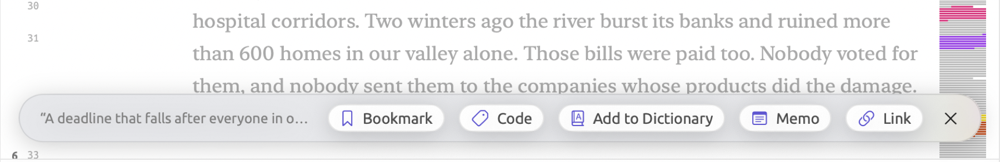
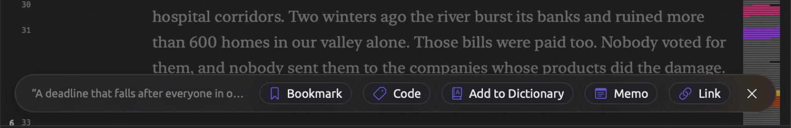


When editing text in the document, this bar becomes invisible, and the commands are disabled.
There are three additional commands related to coding in the Document menu. In Vivo Code (⇧⌘V) codes the selected passage with a code named after its constituent words (see Coding a passage in this chapter). Auto Code… (⇧⌘A) automatically codes any passages annotated by a particular lens (see Coding passages automatically in this chapter). Cancel Link (⌥⇧⌘L) gives up a link you are in the middle of making.
The Coding inspector
The Coding tab of the inspector (tag icon, ⌥⌘3) applies to the currently active document. This tab contains six facets:
| Facet | What it shows | See |
|---|---|---|
| Codes | The code system, with the number of codings of each code in this document. Here you create, edit, and merge codes, and see the code sets. | The Codes facet |
| Codings | This document’s codings and memos in reading order, with the attribute values of each coding | The Codings facet |
| Links | The links with at least one end in this document | Following a link |
| Code Stats | How often each code is used in the document, how much of the text it covers, and which codes overlap | Code frequencies and coverage in Chapter 13, Analyzing Codes |
| Portrait | Two pictures of the document’s coding, Mosaic and Codeline | Portrait in Chapter 13, Analyzing Codes |
| Code Sketch | A word sketch that splits a word’s uses by the codes around them | Code Sketch in Chapter 12, Word Sketch |
Instead, bookmarks are found on the Text tab (see Bookmarks later in this chapter).
The project shelf
Out of ten views on your project shelf, four contain your codes and annotations, which include Codebook, Codings, Memos, and Links. All four views span the entirety of the project if opened from Project in the navigation sidebar; conversely, should they be opened from a set’s or tag’s tab, they cover only documents included in the respective sets or tags. More details regarding the views themselves and their tabs can be found at The project shelf in Chapter 3, Projects and Documents.
This chapter introduces Codebook, Memos, and Links. The Codings view enumerates all coded passages in scope and enables filtering of these passages by attribute values. Alongside Code Stats, Code Matrix, and Relations, the Codings view is covered in The Codings view in Chapter 13, Analyzing Codes.
Codes
Creating a code
Creating a code happens from either the Codes facet in the inspector or the Codebook view. The coding process itself involves selecting passages in the reader and applying codes to those selections via the code palette. Creating a code on the fly from the palette while performing analysis is covered below in Coding a passage. It generally helps to create initial codes for your questions ahead of time, but adding additional codes based upon the data during analysis is also acceptable. Codebooks typically evolve in the first several documents, and editing and merging of codes can happen anytime (see Organizing codes later in this chapter).
To create a code in the inspector:
- Open a document.
- In the inspector, click the Coding tab and then Codes.
- Click + at the right of Code System.
- In the New Code dialog, type a name in Name.
- Set the other fields as described in The fields of a code below, or leave them as they are.
- Click Save.
For creating a subcode, right-click the parent within the Codes facet and choose Add Subcode. The same dialog opens, with the new code appearing below its parent.
When in Codebook view, clicking Add Code below the list creates a top-level code. Right-clicking a parent code while still in Codebook view will bring up Add Subcode. From the menu Project ▸ Add Code, you can get the dialog for a top-level code; while from Project ▸ Add Subcode, the dialog opens for a subcode of the currently selected code either in the Codes facet or the Codebook view.
The Save button remains disabled until the code is assigned a name (it has Name is empty as its tooltip). Always remember to assign a unique name to each code because distinguishing two codes with identical names can become rather confusing in menus and tables.
The fields of a code
Both New Code and Edit Code dialogs share identical fields. Each theme code, including “Deadlines”, in “Climate Debate” has its own color, the format Highlight, the scope Project, and a description under About that tells you what the code refers to. The description of “Deadlines”, for instance, reads “Target years, countdowns and cut-off dates, whether demanded, promised or criticized.”
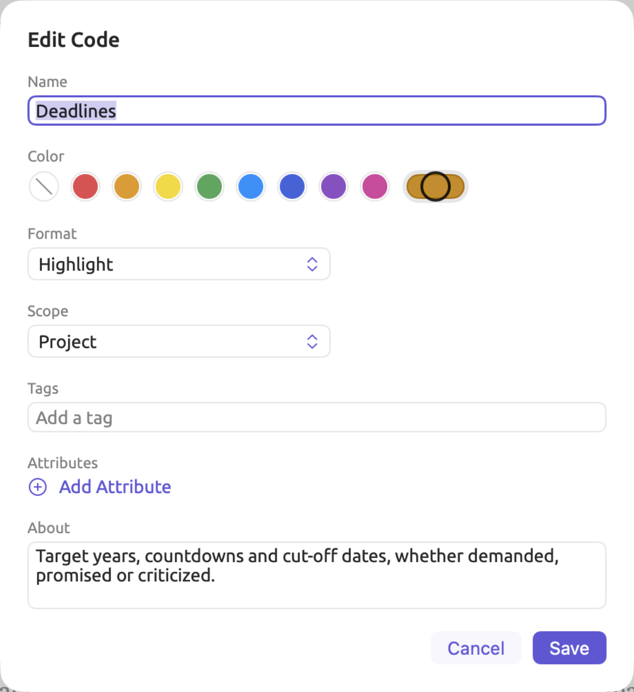
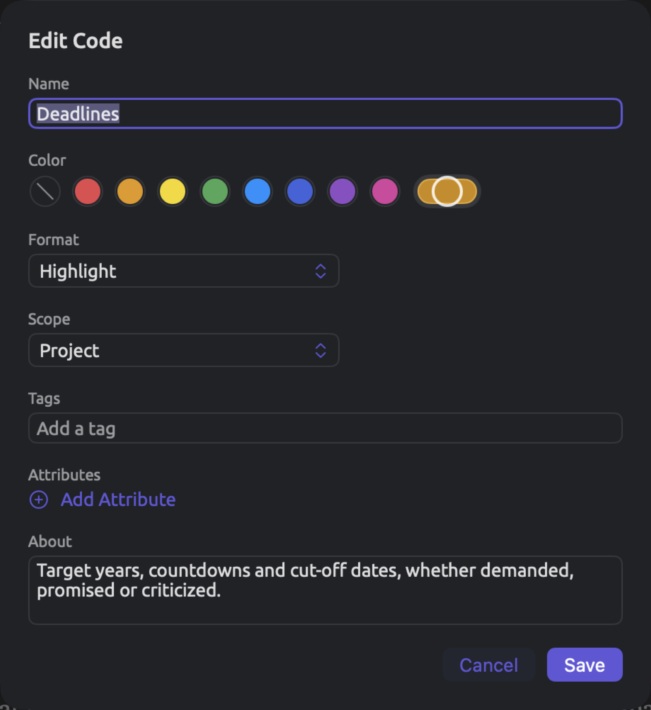
There is a Color setting with which you configure what the code looks like in the reader. This setting allows for the use of No color, or alternatively eight colors spanning the spectrum between Red and Pink. There is a Pick any color well at the far-right end should none of those options suffice. A code with No color shows in the theme’s accent color in the text and in yellow in the gutter. When coding your documents, consider using distinct colors for multiple codes to avoid having overlapping codings clash in the text and the gutter.
Format sets how the reader renders coded text. Highlight fills the background in the color corresponding to the code; Underline places a horizontal bar below the text in said color, while Boxed draws a border frame around the text. Using combinations of formats may help differentiate codings better where they overlap; for instance, a highlighted phrase embedded within a box will still show clearly. The selected format will affect all applications of the code, including coded memos.
More details on Scope, as well as the Tags and Attributes you can attach to a code, appear in separate sections of this chapter, namely Where a code can be used, Tags on codes, and Codes with attributes.
You can describe a code within its About property to explain what it entails and provide guidelines for applying the code consistently throughout the research process. The description appears under the code’s name in the Codebook view and goes into the codebook export.
Where a code can be used
There are three possible scopes for any code in the Scope menu:
- Project makes the code available for all documents of the project. Newly created codes default to having a Project scope.
- Document set restricts usage of the code to only documents of one set. Choose the document set from the drop-down Document set menu below. It is also possible to define the scope as a smart set whose documents are selected based on conditions (see Smart sets in Chapter 8, Sets, Groups, Tags, and Attributes). With the code defined as a Document set scope, LemmaLoom makes the code available whenever new documents enter the set and stops offering it in documents no longer belonging to the set.
- Document defines the scope of the code as a particular document, and the code applies to both that document and its translations. Pick your target document from the Document drop-down menu below.
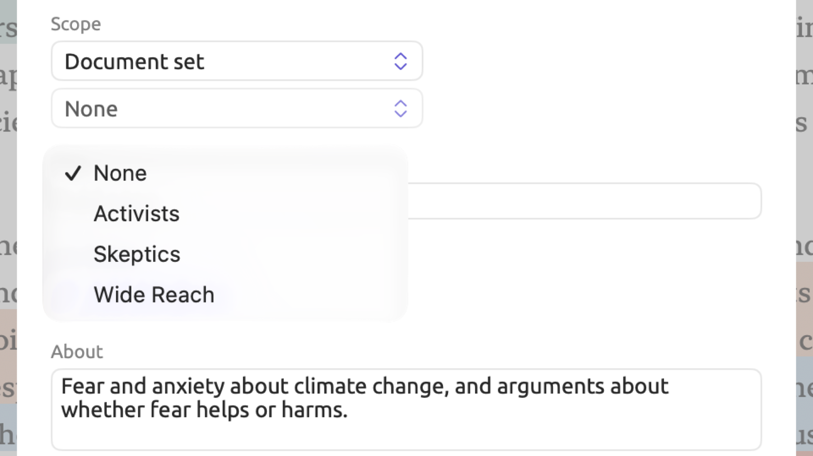
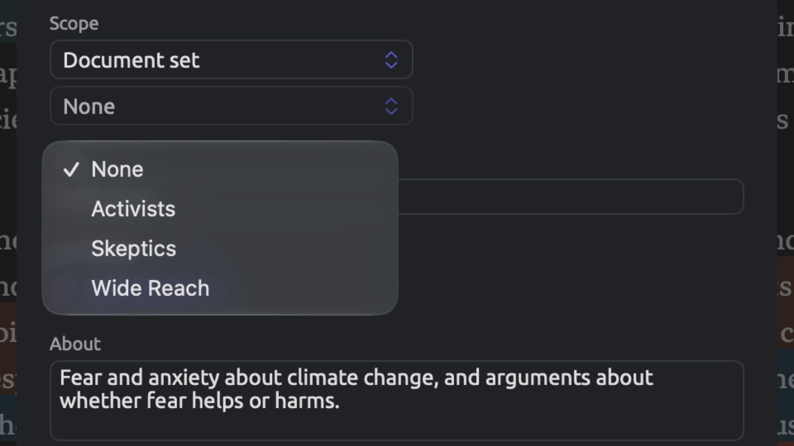
The code palette, the Codes facet, and the Auto Code dialog show codes relevant to particular documents according to their scope. For codes defined as Document set and Document scopes, it will be necessary to first select a set/document from the respective drop-down menus. The Codebook view shows codes of any scope.
In most cases, setting the Project scope is sufficient. However, when dealing with codes that are only meaningful in a certain subset of documents, such as a code for protest tactics in the “Activists” set, you could use a Document set or Document scope. Speaker codes generated during the transcription process by LemmaLoom are document codes because they relate to individual documents (recording transcripts). For instance, “Speakers”, whose subcodes are “Host”, “Activist”, and “Skeptic”, is a document code of “Radio Debate” in the “Climate Debate” project; as such, the palette will not provide access to it while you code “Running Out of Time” (see Speakers in Chapter 4, Importing Material).
When narrowing a code’s scope later, previous codings will remain unchanged in the text and in every count. They can be deleted in documents outside the narrowed scope only via the Codings facet or the Codings view of the shelf (see Removing a code from a passage later in this chapter). Deleting a code’s set means giving the code a new scope before applying it again. Deleting a document deletes its document codes. Translation deletion results in passing its document codes to the original.
For details about the treatment of document codes in word sketches for a set/project scope, see Document codes in Chapter 12, Word Sketch.
Subcodes and the code tree
Within the Codes facet and the Codebook view, the codes on each level of the tree are sorted alphabetically, while subcodes are indented beneath their parent.
You use subcodes whenever your research benefits from hierarchy. This allows you to divide a broad theme according to the different ways that it manifests itself. For instance, within the “Climate Debate” example project, “Urgency” has been broken down into “Deadlines”, in reference to target years and cut-off dates, and “Tipping Points”, in relation to thresholds after which damage is said to become irreversible. In the absence of such natural hierarchy, however, a simple flat list suffices.
A parent code is simply another code. You use a parent code when the passage belongs to the broader theme but falls outside of its various manifestations captured by subcodes. In “A Mayor’s Promise”, “We do not have the luxury of a slow start” has been coded “Urgency”, since it belongs to neither “Tipping Points” nor “Deadlines”. Only the passages coded with a parent itself contribute to the count beside it.
Moving a code entails dragging the code onto its new parent code within the Codes facet or Codebook view, or right-clicking the code to invoke Move To. The Move To submenu displays a drop-down tree excluding the moved code itself as well as its subcodes. At the top of this list, Top Level unparents the selected code. Project ▸ Move To does the same thing for the currently selected code. The code keeps its codings, and its subcodes move with it.
Applying codes
Coding a passage
The code “Deadlines” applies to three targets in the fourth paragraph of “Running Out of Time”, “Net zero by 2050. Coal gone by the end of the decade. Emissions halved by 2030.” On the other hand, the passage selected in the figure, from “Farmers Are Not the Enemy”, is coded both as “Costs” and “Responsibility”, since it talks about who pays for the shift as well as who should act. Thus, the palette displays a checkmark next to both.
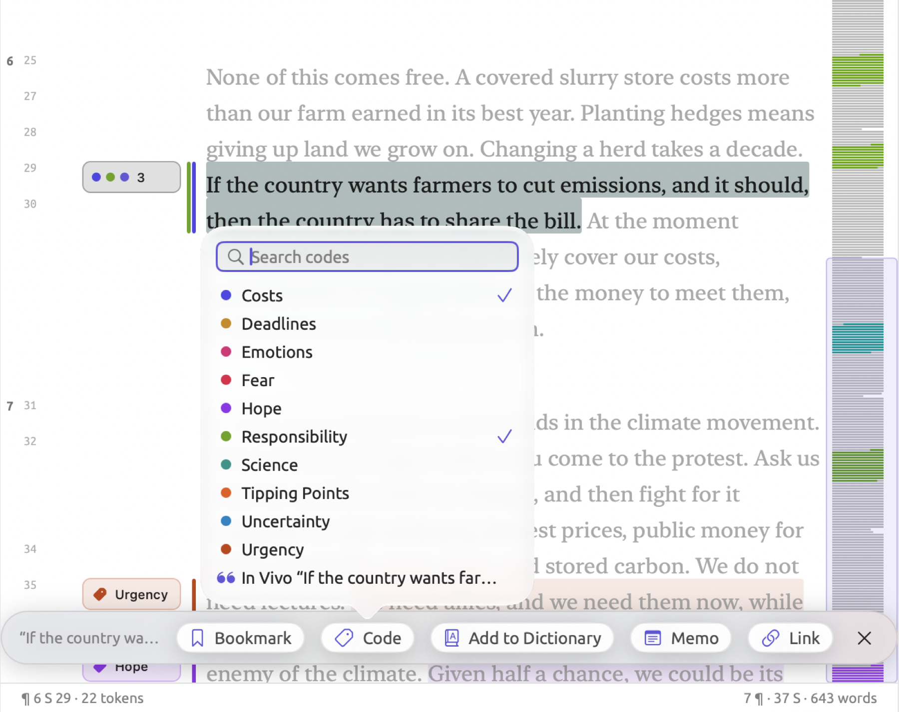
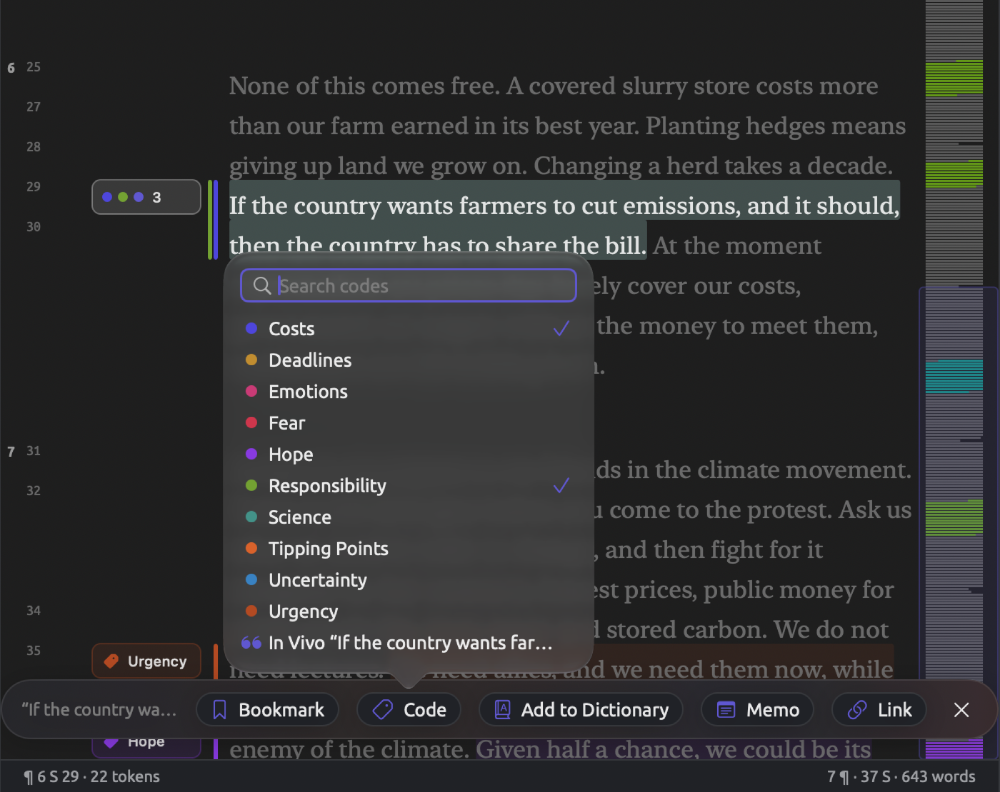
For coding a passage:
- Select a passage, click a paragraph or sentence number in the gutter, or click a single word.
- Click Code in the selection bar, or press ⇧⌘C.
- In the palette, click the code. If it has attributes, a dialog first asks for their values (see Codes with attributes later in this chapter).
What is selectable depends upon the document. Word and sentence number selections are available only after a document is indexed. Passage selections are usable with all documents, even those written in languages aside from English, German, or Chinese.
The palette displays every code applicable in the current document in alphabetical order. Each entry lists the code name with its associated color. Since this list is linear and not hierarchical, “Deadlines” occurs somewhere after “Costs” yet before “Emotions”. The Search codes field has focus when displaying the palette, allowing typing of partial names into it to narrow down the list and highlighting the top entry in the results. The highlighted entry gets applied to the passage when pressing Return, while ↑ and ↓ navigate highlights, even prior to searching, so with a few letters and Return you can code a passage from the keyboard alone.
Once a code is applied to a passage, the palette remains open to allow application of additional codes to the same passage immediately. Close the palette by pressing Esc, or clicking elsewhere on the screen outside the palette area.
A checkmark icon appears beside the names of any applicable code already covering parts of the selected passage; click a checked code, or press Return with that code highlighted, to remove that code from coverage in the passage (see Removing a code from a passage below). Changing what parts of the passage a coding covers requires removal of the existing coding and coding anew. Giving an existing coding another code can be done using Change Code in the Codings facet (see The Codings facet below).
You may add codes thought up mid-analysis directly into your codebook from your document context using the palette. Should none of the codes in the displayed list have your intended code’s name, Add Code “…” shows at the bottom of the list, adding a code bearing that name and applying it. In Vivo “…” is always last in the list; it adds an in vivo code based on the currently selected text in your document, naming the code with that selected text and applying it. Selecting “a wish with a calendar attached” in “Running Out of Time”, for example, offers In Vivo “a wish with a calendar attached”. Document ▸ In Vivo Code (⇧⌘V) does the same without the palette. Names over 60 characters long get truncated with ellipses. If a code you can use in this document already has that name, ignoring capitalization, that code is used instead of a newly created one.
Codes added through either the Add Code or In Vivo function appear at the top level of the codebook’s hierarchy, with No color, in Highlight format, with the scope Project. When you next look over your codebook, consider giving these codes a color and a place in the tree (see Organizing codes later in this chapter). In vivo codes may prove useful during initial coding sessions as they keep codes closer to original phrasing in materials, and you can rename or merge them once your codes settle. Edit ▸ Undo Apply Code (⌘Z) removes both the coding and the new code.
How codings are presented
With the Codes lens enabled, as it is when a document opens, each coding is visually marked with its respective code’s coloring and formatting scheme. Beside each coded passage in the gutter is a thin bar colored the code’s color, along with the code name appearing in a small annotation next to the start of the coded passage. Overlapping codings stand side by side, up to three bars across; any further codings share the third bar. Hover the mouse pointer over the bars to highlight the respective passages; clicking either a bar or the code annotation selects the passage.
Should multiple annotations overlap in nearly the same vertical position within the gutter, LemmaLoom displays only one annotation for those multiple annotations, much like the one shown next to the selected passage in the figure above. Codings, memos, bookmarks, and link ends are combined alike; each combined annotation has colored dots for the first three items and counts the items in it. Hovering or clicking a combined annotation lists the individual items, allowing a click to select each item’s passage; if it concerns a link end, then clicking it navigates you to the other end of the link.
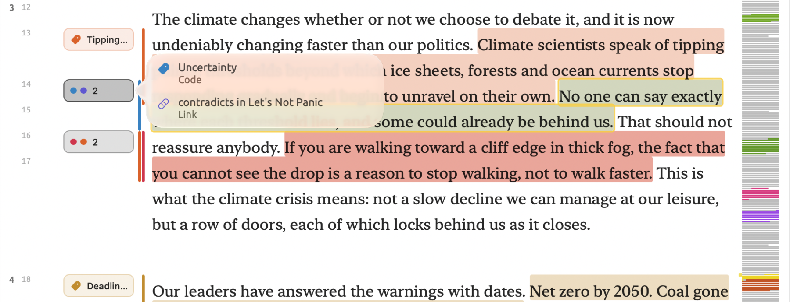
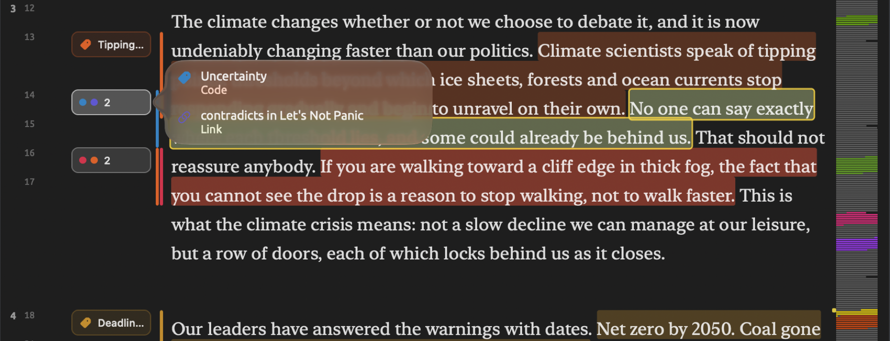
Disabling the Codes lens removes all the visual markers of codings at once (see Codes and Bookmarks in Chapter 6, Lenses).
Removing a code from a passage
- Select the passage. Clicking its bar or annotation in the gutter selects exactly the coded text.
- Open the palette (⇧⌘C).
- Click the code with the checkmark.
When clicking the code, you will delete all codings associated with that code that overlap with your selection, regardless of whether those codings extend outside your selection range. Exercise caution while making the selection when there may be multiple codings of the same code near each other.
Should you wish to remove a specific coding rather than all overlapping codings, use the Codings facet. You can click the coding and then Delete beneath the coding’s text, or you can right-click the coding and select Delete Coding from the menu. Alternatively, if you are viewing the Codings view of the shelf, right-click the segment and select Delete Coding.
Deleting a coding means deleting that coding’s attribute values, and its copies in the document’s translations.
The Codings facet
The Codings facet displays all codings in the current document according to their reading order. The toggle on top alternates between Codings and Memos. Each has its own counter next to its label in parentheses; for instance, Codings (13) for “Running Out of Time”. Reading, editing, and deleting memos discusses the latter in greater detail later in this chapter.
Every coding has its own row consisting of the code’s color and name, location, and first line of its text. Paragraph 4, sentence 2 translates to a location of ¶4·2. For a document without sentences, such as one that has not been indexed, it shows just the paragraph alone, as in ¶4. When you click a coding, LemmaLoom scrolls the reader to the passage coded. The click also opens the row to reveal up to four lines of the text along with any attribute values set for it and a Delete button. Another click closes a coding. Alternatively, right-clicking brings forth options to either Go to Source, Change Code, or Delete Coding.
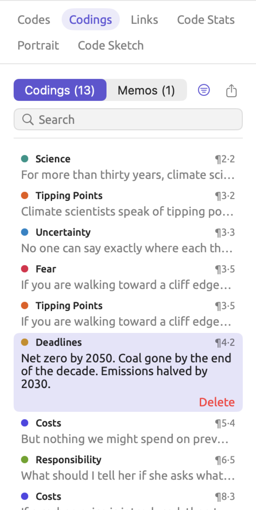
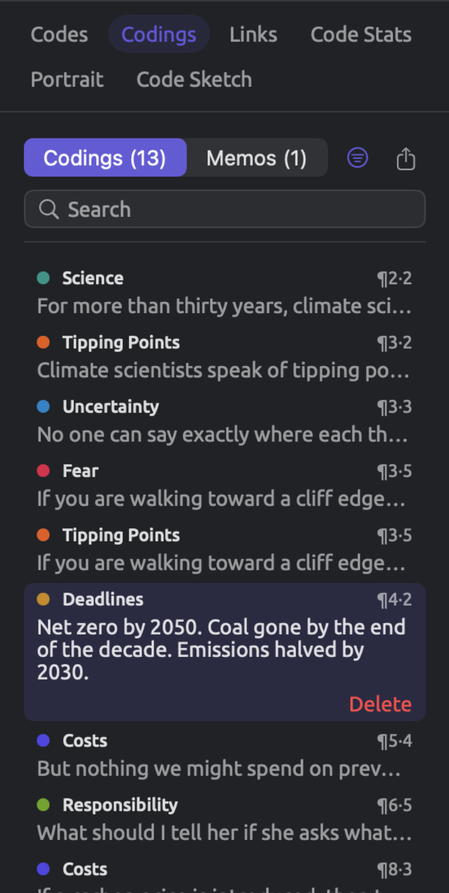
In Change Code, the possible codes to assign are displayed hierarchically as a tree. After choosing one, both the coding and its copies in translated versions adopt the selected code. The coding retains its attribute value for each attribute that the new code possesses under the same name and type, while losing any other attributes’ values. You undo changing a code, values included, with Edit ▸ Undo Change Code (⌘Z). The Codings view of the shelf features an analogous shortcut menu item in every segment.
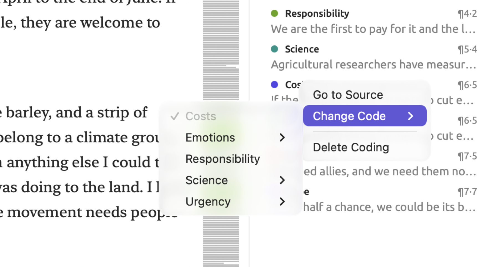
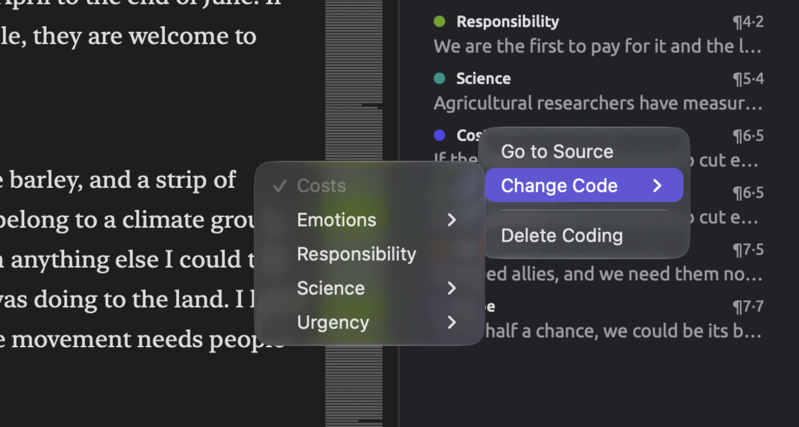
There are three additional controls above the codings list:
- With Search, you narrow the list by searching the code names or text.
- Filter by code, the funnel button, lets you limit the display of codings only to one chosen code at once. Choosing All Codes reverts to displaying all codings.
- With Export, you can export all codings currently shown on screen to a CSV file with Code, Location, Start, End, and Text as columns. Of these, Start and End indicate where in characters the passage lies relative to the document’s start position.
Codes with attributes
Sometimes codes will require more nuance than yes/no responses. In a study on the presence of fear within climate-related writings, for instance, you might record the intensity level of each coding for fear. The attribute here would be “Intensity”, while the options could be either “Low”, “Medium”, or “High”, and each coding of “Fear” would hold one of them. Typically, use attributes when there is a qualitative aspect of your codes which always exists within each passage coded (in this case, how intensely the emotion is felt). Use subcodes when there is another layer to a code which deserves to become its own distinct entity within the palette and code tables.
To assign an attribute to a code:
- Open the code’s dialog, for example, by double-clicking the code in the Codes facet.
- Under Attributes, click Add Attribute.
- Type the attribute’s name. Names of attributes already in the project are suggested as you type, and choosing one also takes over its type and choices.
- Choose a type in the menu showing Text beside the name, namely Text, Integer (a whole number), Decimal, Boolean (true or false), Date, or Picker (one of a list of choices).
- For Picker, type the choices in the rows that appear, one per row.
- Click Save.
Above Add Attribute are listed the code’s existing attributes, including each one’s type. The pencil button (Edit) will open the Edit Attribute dialog where you will be able to edit the attribute’s name, choices, Description, and type if possible depending on existing values recorded in the attribute. Its Save button immediately applies the changes without requiring confirmation in the code dialog itself; they stay even if you then cancel the code’s dialog. The minus button (Remove attribute) deletes the attribute along with all of its values upon saving the code. More information regarding the types mentioned above can be found in Attribute types in Chapter 8, Sets, Groups, Tags, and Attributes.
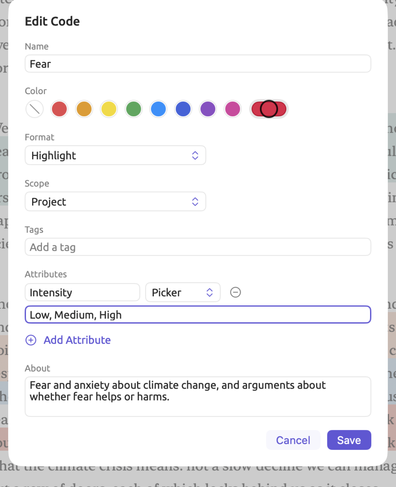
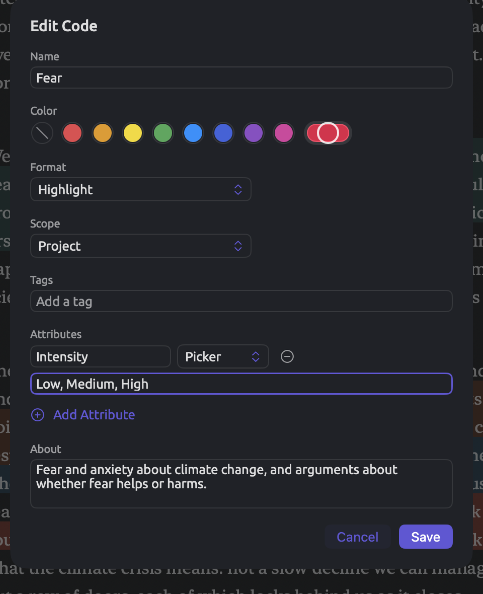
Whenever an attribute-containing code is applied to some piece of text, LemmaLoom first prompts you to fill out the associated attributes in a small dialog. Fill in the values you need and click Apply Code.
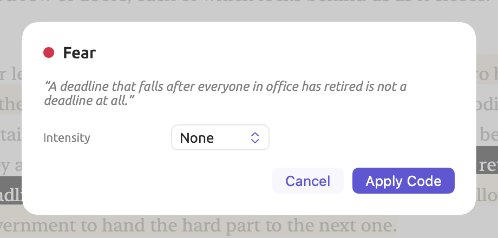
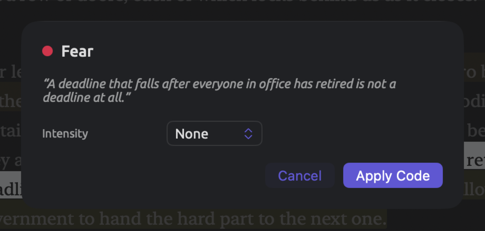
After applying an attribute-containing code to text, revising values becomes possible by clicking the coding itself within the Codings facet. Changes are saved instantly upon modification of a value control.
Within the Codings view of the shelf, the selected segment’s attribute values are displayed alongside controls to modify them directly. Additionally, segments within that view can be filtered based on their values. The Attribute Breakdowns section of Code Stats, both within the facet and the shelf view, breaks each code’s codings down by attribute value. See Attribute breakdowns in Chapter 13, Analyzing Codes. The query builder allows querying codings based on their attribute values (see Chapter 15, Building a Query).
A coded memo assigned to a code with attributes has its own set of values (see Coded memos later in this chapter).
Codings in translations
Translating documents allows you to create versions of your documents in different languages. “Running Out of Time (German)” is an example of a translated document in German, listed under its original in the navigation sidebar. Coding any passage in “Running Out of Time” applies to its corresponding passage in the translated version, and vice versa. Any memos, links, and bookmarks made in either document are copied too. All copies remain linked together.
How exactly a copy fits its passage depends on how the sentences of the two texts align (for more information, see Where copies are stored in Chapter 9, Translations and Split View). If one copy gets deleted or edited, then all copies of that particular instance of coding follow suit. A coding and its copies share identical attribute values as well.
Any analysis performed on sets or projects defaults to original documents. Thus, a coding and its copies count once in the analysis output (see Translations in analyses in Chapter 9, Translations and Split View).
Organizing codes
Editing a code
To open the Edit Code dialog:
- Double-clicking the code in the Codes facet opens it directly, while right-clicking it and choosing Edit opens it too.
- Similarly, in the Codebook view, double-clicking the code, clicking Edit beside the code name in the details, or right-clicking and selecting Edit does the job.
In both places, selecting a code only takes a single click, and pressing Return with the code selected brings up the Edit Code dialog. After making changes as necessary, pressing Save will reflect any changes instantly in your currently open documents.
The Codes facet
The Codes facet lists, under the Code System heading, the codes whose scope includes the active document. In this case, those codes applicable to the active document (“Running Out of Time”) are everything in “Climate Debate” except “Speakers” and its subcodes, which belong to “Radio Debate”. “Costs” and “Uncertainty” both have a memo of their own, and hence have note icons displaying that information, and the code set “Arguments” appears below the code system.
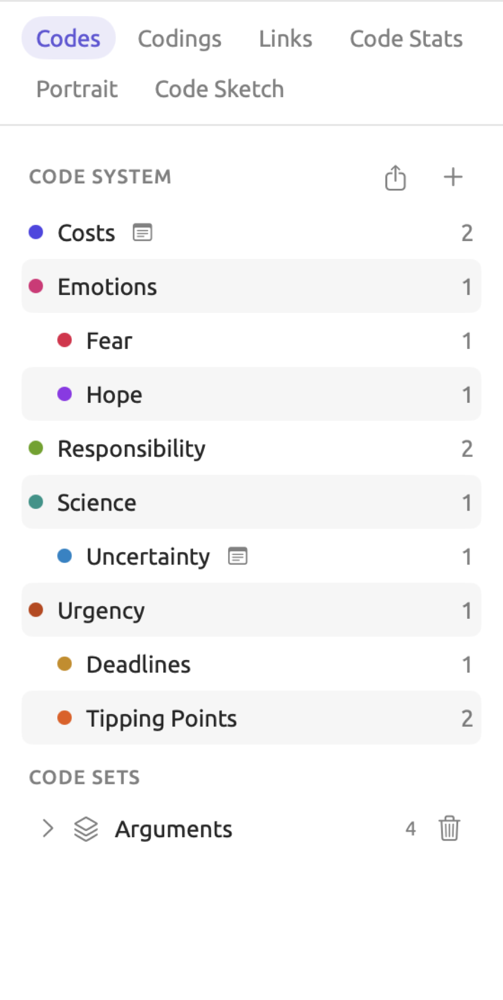
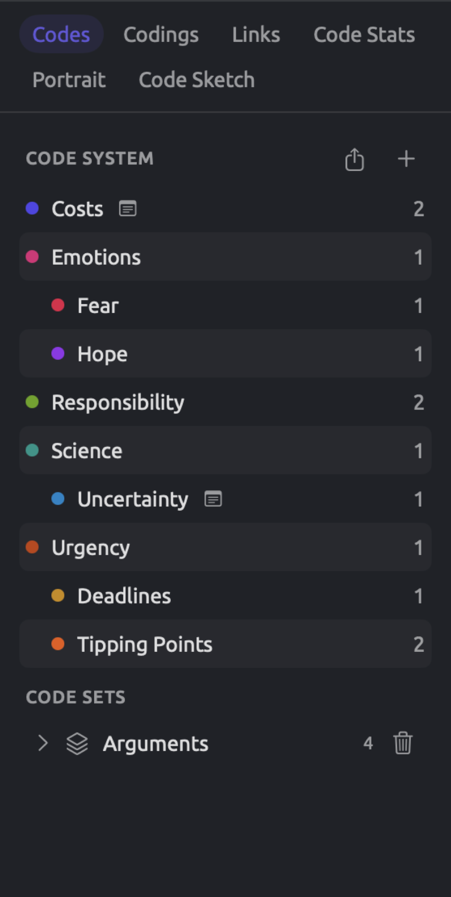
In each row starting from the left side, you will see:
- a color and name of the code;
- a note icon if there is a memo attached specifically to the code, possible only if the project has been imported (see Memos on documents, codes, and the project later in this chapter); and
- on the far right side, how many times the code was used in this particular document (including coded memos related to that code). Click on the value (Show Codings) to view the list of codings in the Codings facet.
In the heading, two buttons are provided. The first option, Export, will export the whole list as a CSV file while + allows adding a new code. When you right-click a code, options such as Edit, Add Subcode, Show Codings, Move To, Merge Into, Add to Code Set, and Delete appear; the Project menu offers Add Subcode, Move To, Merge Into, Add to Code Set, and Delete Code for the selected code.
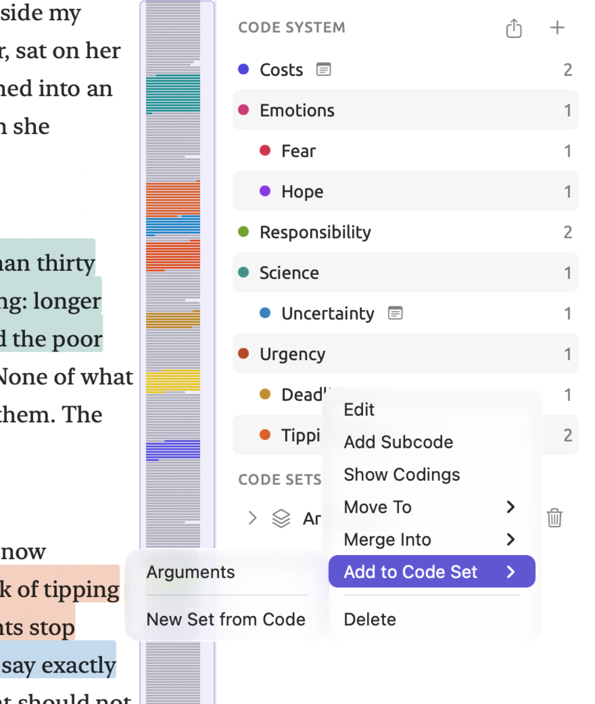
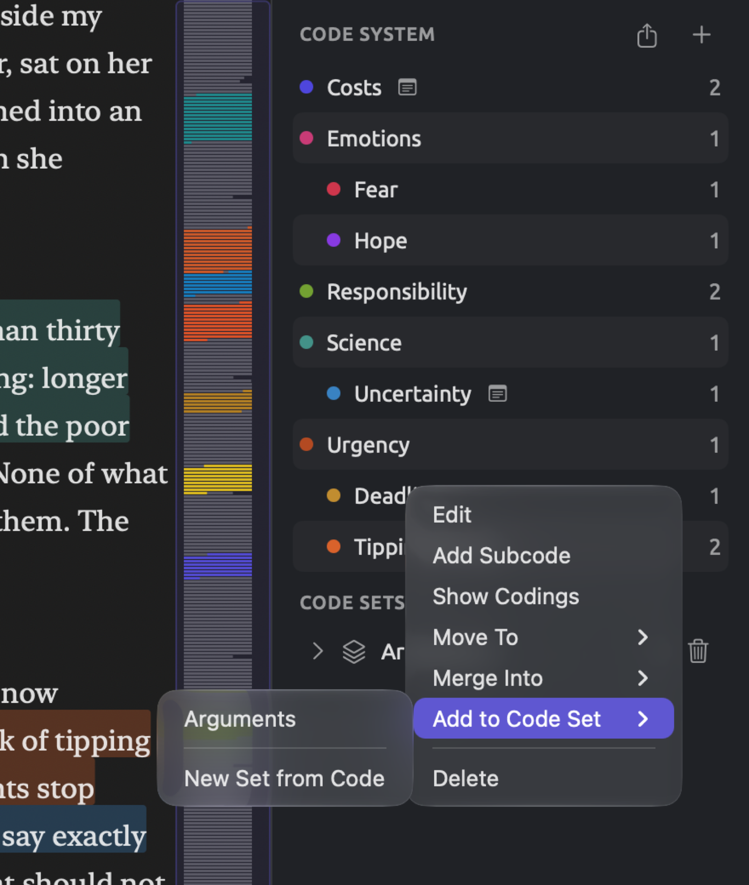
Beneath the code system, if your project contains any code sets, these will appear under a separate section labeled Code Sets (see Code sets below).
Tags on codes
Tags are short labels for projects, documents, codes, memos, and links. All tags exist as one list throughout LemmaLoom, which means that a tag such as “follow-up” means the same wherever it is used (see Tags in Chapter 8, Sets, Groups, Tags, and Attributes). Similar to the use of tags elsewhere, tags on codes serve the purpose of organization, not meaning-making. Perhaps you could use tags to identify the codes you need to review further.
Tagging a code happens in the code’s dialog. Type a tag into the Tags field (its placeholder reads Add a tag) and press Return. A comma denotes the end of a tag input. Suggestions of existing tags anywhere within LemmaLoom appear during typing. The removal of a tag happens by clicking the button next to the tag (×).
If viewing the codes within the Codebook view, you get an option to filter the codes via tag when at least one code gets tagged. Filter by tag appears as a button below the list. Selecting a tag filters the list so that only the codes carrying the tag appear. The parents of such codes remain visible, maintaining the structure of your tree. The selected tag displays above the list; click its × to view all codes.
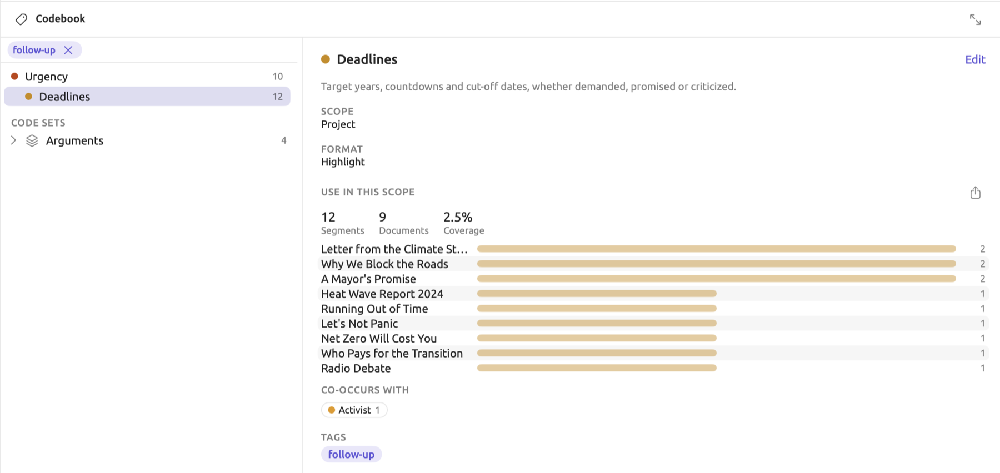
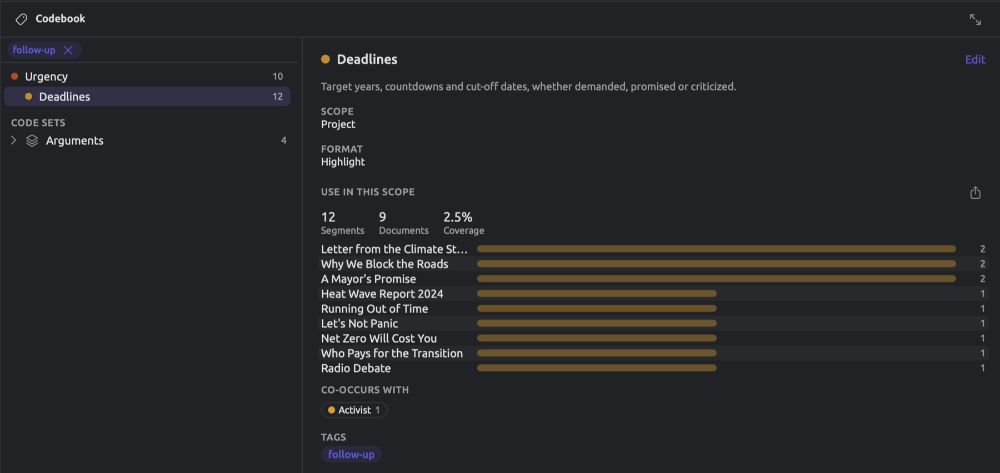
Memos assigned to a code take on the tags of that code automatically. With queries, a Tags rule allows searching for specific codes based on tags attached to the code (see Chapter 15, Building a Query).
Code sets
A code set allows you to bundle multiple codes from any place in your code tree for use in comparisons or queries. For example, you could make one for the codes of a particular research question. In the “Climate Debate” example project, the code set “Arguments” includes the codes “Costs”, “Responsibility”, “Science”, and “Uncertainty” from different parts of the tree.
To create a code set:
- Right-click a code, in the Codes facet or in the Codebook view.
- Choose Add to Code Set ▸ New Set from Code.
LemmaLoom then makes a code set containing this code, and its default name, New Code Set, is selected so that you can type your own and press Return. Name each code set based on the common feature of the codes inside, something like the research question they are addressing. Later on, should you decide to rename the set, right-click the set in the Code Sets section and select Rename. If you want to add another code to a particular set, first right-click the code, then choose Add to Code Set and select the destination code set from the menu.
The Code Sets section, below the code tree in the Codes facet and the Codebook view, contains each existing set along with a statistic showing the number of codes they hold. Expand/collapse each set by clicking it. To discover the set(s) a specific code belongs to, right-click the code, open Add to Code Set, and the sets it already belongs to will be disabled. Should you wish to delete any code set, either right-click it and select Delete, or click the nearby trash can in the Codes facet.
To take a code out of a set, expand the codes of the required code set, then right-click the targeted code and select Remove from Code Set.
In Sketch Space, code sets may provide columns for comparisons between codes (see Grouping the codes in Chapter 14, Sketch Space). Code sets can also become items for a query, listed as Code Sets, and a rule on a code’s Code Set finds the codes a set holds (see Chapter 15, Building a Query).
Merging codes
When you merge two codes, you are essentially folding one code into another. All codings applied using the first code are now folded into the second, while the first code is deleted. Merges happen when you realize that the two codes mean the same thing, or when you want to fold a subcode back into its parent code. If you wish to move a code around within the hierarchy without folding it, you should use Move To (see Subcodes and the code tree earlier in this chapter). You can start fine-grained and merge later as necessary.
- Right-click the code you want to merge away, in the Codes facet or in the Codebook view, or select it and open Project ▸ Merge Into.
- Choose Merge Into, then the code that is to remain. The menu leaves out the code itself and its own subcodes. In the Codes facet, it lists only the codes you can use in the open document; in the Codebook view, it lists every code of the project.
- An alert names both codes and says how many coded segments and subcodes will move. Click Merge.
“Deadlines” is made up of 12 segments while “Urgency” is made up of 10 segments in the Codebook of the “Climate Debate” project. When you choose to merge “Deadlines” into “Urgency”, an alert appears reading Merge “Deadlines” into “Urgency”? and informs you that 13 coded segments will move to “Urgency”, while “Deadlines” will be deleted entirely. Once you confirm, the Codebook will display 10 + 12 = 22 segments in the code “Urgency”.
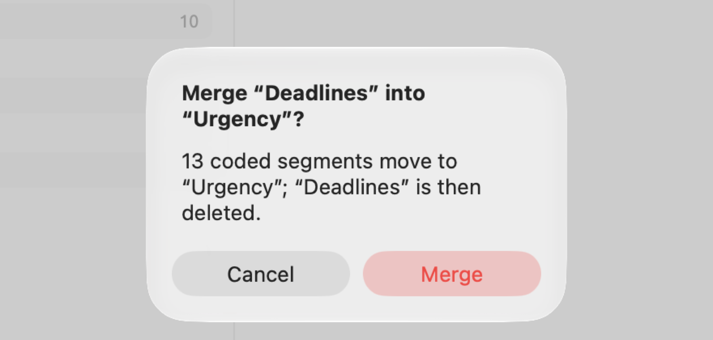
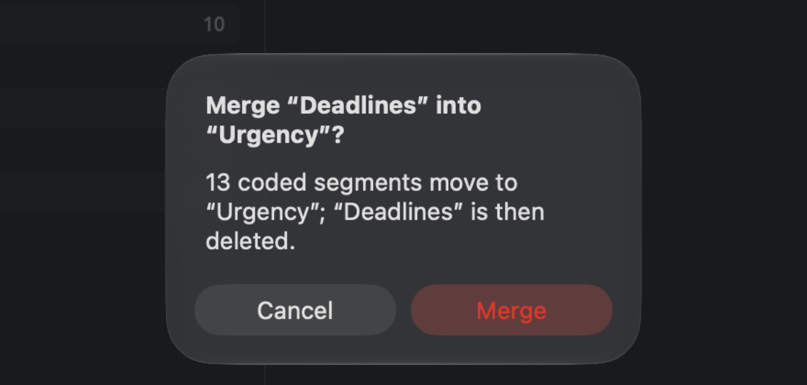
All counts in this alert, and in the alert for deleting a code, refer to all instances of coding within the project, and that includes copies found in translations such as “Running Out of Time (German)”. Since the Codebook view does not consider copies in a translation, you will find that, for a code used in “Running Out of Time”, the number in the alert is higher than Segments. In “Deadlines”, there is only one coding in “Running Out of Time”, making the total in the alert, with its copy, 12 + 1 = 13.
The items moved include:
- All the codings and coded memos of the merged code.
- Its subcodes become subcodes of the remaining code.
- Memos about the merged code itself.
- Its place in code sets; wherever the two codes occurred together in a set, the remaining code now occurs once.
- Attributes along with their respective value(s); where there is an existing duplicate name/type pair with the remaining code, both are merged into one.
All saved queries that refer to the merged code automatically refer to the remaining code henceforth. The merged code’s name, color, format, scope, tags, and description are deleted, leaving behind only the remaining code.
If a passage carried both codes over exactly the same text before the merge, it is afterward coded twice with the remaining code. Each of them shows up individually in the Codings facet, and both are counted toward your counts of total codings of that code in your project. If that causes trouble with your counts, remove one of the codings (refer to Removing a code from a passage earlier in this chapter).
Deleting a code
- Right-click the code and choose Delete (in the Codes facet) or Delete Code (in the Codebook view), or select it and choose Project ▸ Delete Code.
- The alert says how much will go with it, for example, This removes 2 subcodes and 31 coded segments. Click Delete.
When you delete a code, the deletion cascades through all subordinate codes underneath it, removing any coding of the parent and subordinate codes as well as attribute values associated with those codings. Deleting the code “Urgency” would, for example, erase 31 codings in total, which includes 11 for “Urgency”, 13 for “Deadlines”, and 7 for “Tipping Points”, and each count also includes the copies in “Running Out of Time (German)”. When deleting a code, any memos assigned to it convert to regular memos.
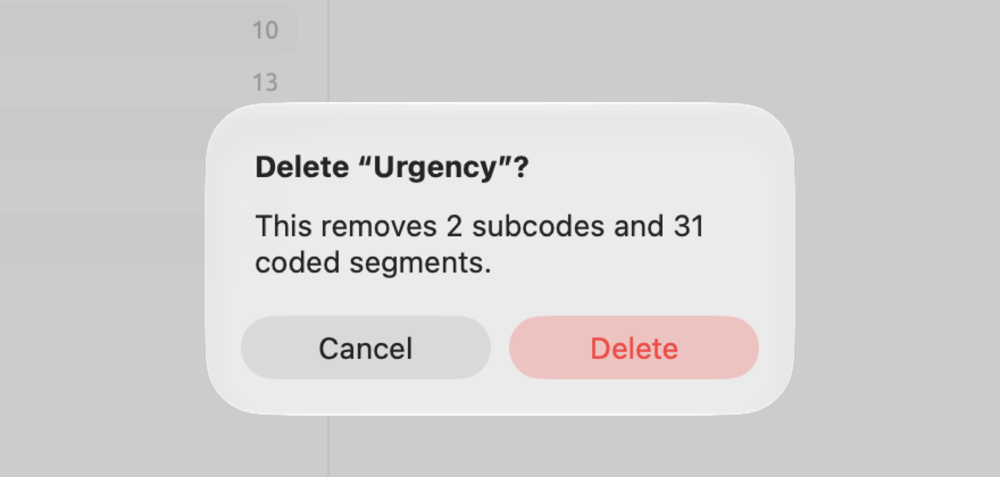
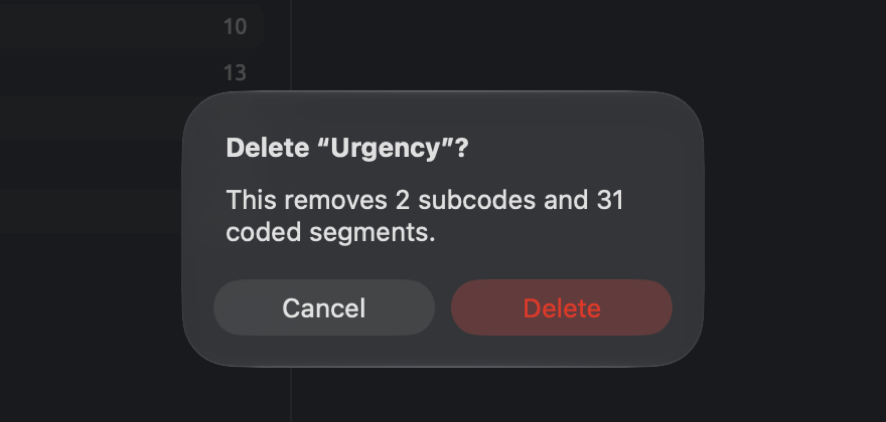
Edit ▸ Undo Delete Code (⌘Z) restores everything lost by deleting the code.
The Codebook view
The Codebook view displays the complete system of codes in the current project, along with descriptions, figures, and tags for each code. Access it via the navigation sidebar under Project, or click Codebook on any set’s or tag’s tab. A set’s or tag’s tab opens on Codebook.
In this figure, “Costs” is selected in the Codebook of “Climate Debate”. It has 19 segments in 10 documents, with the most (five) appearing in “Net Zero Will Cost You”. The code accounts for 3.6 percent of the total project text. Segments of the code overlap with the “Responsibility” code five times.
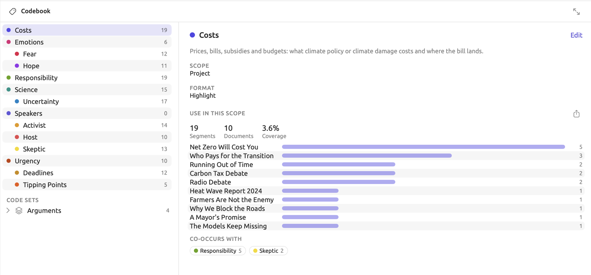
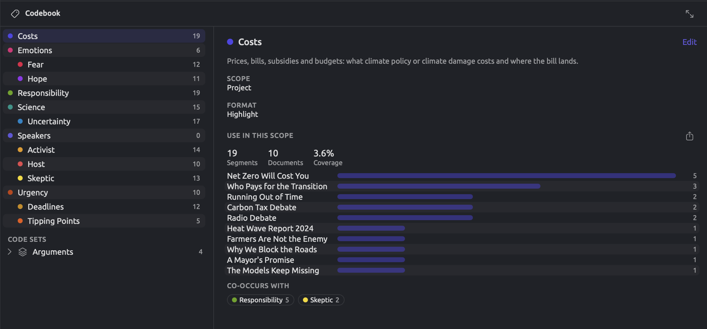
On the left side is the code tree, and beneath this is the list of the code sets contained in this project (see Code sets earlier in this chapter). Each code in this tree has a number indicating the quantity of coded segments it has in the current scope. Underneath the code tree are Add Code, the tag filter (see Tags on codes earlier in this chapter), and Export. Move the divider between the tree and the details to give more space to either of them.
Select a code to see its details on the right side, where the following appear:
- its color, name, and Edit button;
- a description taken from About;
- Scope and Format settings;
- USE IN THIS SCOPE, with three numbers (Segments, Documents, and Coverage percentage) and bars for all documents that contain this code, ordered by most segments used first;
- CO-OCCURS WITH, a list of all other codes whose segments intersect with the segments of this code, along with how many intersections occur;
- TAGS, all tags applied to the code.
By clicking on any bar under USE IN THIS SCOPE, you can open the corresponding document at this code’s first segment in the reader. At the right of the heading USE IN THIS SCOPE is an export button, which allows saving these bars as an image (PNG or PDF) or the numbers as a CSV file.
Double-clicking Segments or right-clicking it and selecting Show Codings opens the segments of this code in the Codings view. A code listed in CO-OCCURS WITH acts similarly, and lists the segments of this code that intersect it. If necessary, you can also add the subcode segments via the Include Subcodes option beside the filter in the Codings view (see The Codings view in Chapter 13, Analyzing Codes).
Numbers only account for codings in the original documents (i.e., a coding in “Running Out of Time” and its copy in “Running Out of Time (German)” count once). A parent’s numbers count the parent’s own codings, and coded memos are left out.
Reading the numbers
Segments is the number of codings of the code in the scope’s documents. Documents is the total number of documents containing at least one of the code’s segments.
Coverage is the proportion of the total number of characters in documents in the scope covered by the code’s segments. This statistic answers the question whether a particular code covers only a few lines here and there, or large sections of documents.
is the total number of characters in the segments of the code. Where segments from the same code overlap in the same document, the overlapping characters are counted only once. is the total number of characters in all the documents within the scope, irrespective of being coded or not. Spaces and line breaks are also counted.
Within the Codebook of the “Skeptics” set, the “Costs” code has 9 segments in 3 out of 5 documents. Imagine that the documents in this scope hold 18,000 characters altogether, while the 9 segments in total take 1,080 of these characters. These numbers approximate actual figures quite accurately. The view displays Segments 9, Documents 3, and:
The “Let’s Not Panic” and “Science Is Never Settled” documents have no segments of “Costs”, yet they contribute to . Within the project’s Codebook, includes all the activist texts, “Heat Wave Report 2024”, and all the rest, whereas encompasses the “Costs” segments from all these documents. Assume that the project contains 50,000 characters, whereas the segments of the “Costs” code account for 1,800 of these, i.e., the 1,080 mentioned above plus another 720 characters from elsewhere in the project. Thus, the project’s Codebook yields , or 3.6%, though no coding has changed. Use this statistic in conjunction with Segments to compare several codes’ coverages within one and the same scope, where is the same for all codes in question.
The Code Stats facet offers this same measurement for individual documents, as described in Code frequencies and coverage in Chapter 13, Analyzing Codes.
CO-OCCURS WITH counts the number of overlapping pairs of segments. Every instance where one “Costs” segment overlaps one segment of another code adds +1 to that other code’s CO-OCCURS WITH count, whereas if the same “Costs” passage overlaps 2 distinct “Responsibility” segments, this contributes +2 to “Responsibility”. A high number here may merely suggest that both codes were frequently used, since a code with many long segments overlaps other codes by chance. Within the “Climate Debate” project, “Costs” and “Responsibility” were used more than any other two codes, having 19 segments each, with “Costs” listing “Responsibility” with 5. For a quantitative assessment of the degree to which two codes tend to co-occur within the same document, refer to the Co-occurrences section of the Code Stats facet, explained in Co-occurrences in a document in Chapter 13, Analyzing Codes.
Exporting the codebook
Export below the tree produces an export of codes displayed in the tree as a CSV file, which contains six fields (Code, Path, Level, Count, Description, and Color). The Path field displays where the code lies in relation to other codes within the tree hierarchy. So, if you were looking at the code called “Deadlines” under the code “Urgency”, its path will display Urgency / Deadlines. Level displays the level at which the code falls within the hierarchy (i.e., Level 1 for the top-level codes, Level 2 for subcodes, etc.). The Count displays the total number of coded segments in the scope. When a tag filter has been defined, only those codes displayed within the view will be exported. Alternatively, if you wish to export the codebook in the REFI-QDA format, see Exporting a codebook in Chapter 22, Exchanging and Exporting.
The Codebook window
For keeping your codebook side by side with your reader, first access the Codebook view from Project in the navigation sidebar, then click Open in a window (the two diagonal arrows) located at the rightmost edge of the bar above the view. Alternatively, open your codebook window by choosing Window ▸ Codebook, or right-clicking on your project in the navigation sidebar, then selecting Codebook. Your codebook window spans across your entire project. Your codebook window includes a button for every view of the project shelf along its top edge. Your project’s Codings, Memos, and Links views share the same Open in a window button, which opens the window on that view.


Memos
A memo contains your thoughts regarding the significance of a particular passage. This could include comparisons between passages, your reflections, and any questions that might arise during the coding process. Typically, you would draft your memos concurrently while coding your documents, and you return to them later while drawing conclusions. In the example project called “Climate Debate”, there are memos associated with several passages in four separate documents. Within the document “Running Out of Time”, for instance, the memo on the passage “It is a wish with a calendar attached” notes that distant targets are read as evasion rather than ambition.
Writing a memo
- Select the passage the memo is about.
- Click Memo in the selection bar, or press ⇧⌘M.
- The New Memo dialog shows the selected text at the top. Type your note in Memo.
- To tag the memo, type tags in Tags. To make it a coded memo, choose a code in Code (see Coded memos below).
- Click Save.
The Save button remains disabled until you put something inside your memo (its tooltip reads Memo is empty).
Coded memos
When a memo has had a code selected in the Code menu, that memo becomes a coded memo. Coded memos are used when your note pertains to the code you’ve selected rather than the selected passage itself, such as why a particular passage qualifies for the code you’re applying. Within “Running Out of Time”, the example sentence involving approaching the edge of a cliff amid heavy fog has been coded “Fear”. Selecting “Fear” as the Code in your memo on this passage, as in the figure, results in double-counting “Fear” within both the Codes and Code Stats facets, once for the coding and once for the memo. If you wish to discuss something related to your coding but don’t wish to add any further counts to your coding statistics, select None in the Code menu.
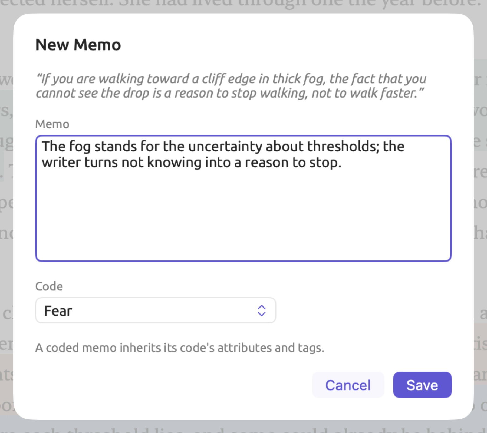
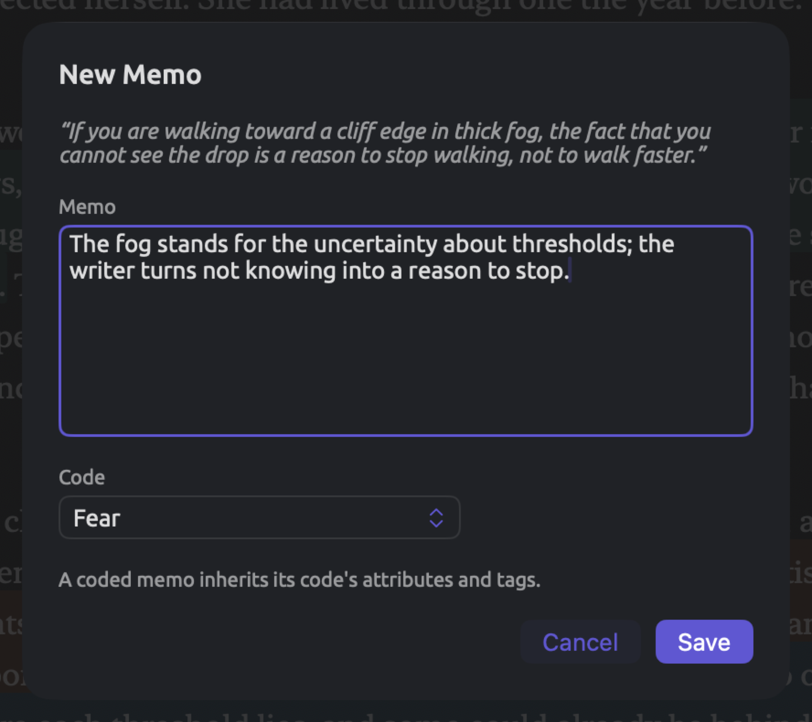
A coded memo is rendered in the code’s color and format, and its annotation in the gutter takes the code’s color.
Furthermore, a coded memo counts as a coding of its code, both in the Codes and Code Stats facets, as well as in query results, unless you uncheck Coded Memos Count as Codings (see Options in Chapter 15, Building a Query). The Codebook and Codings views count codings only.
Memos coded using a code adopt that code’s tags. Upon selecting a code for coding a memo, the Tags entry field converts itself to Inherited Tags, which shows them, while deleting anything that you may have entered previously in that field. If your code does not have any tags assigned to it, the dialog shows the explanation A coded memo inherits its code’s attributes and tags.
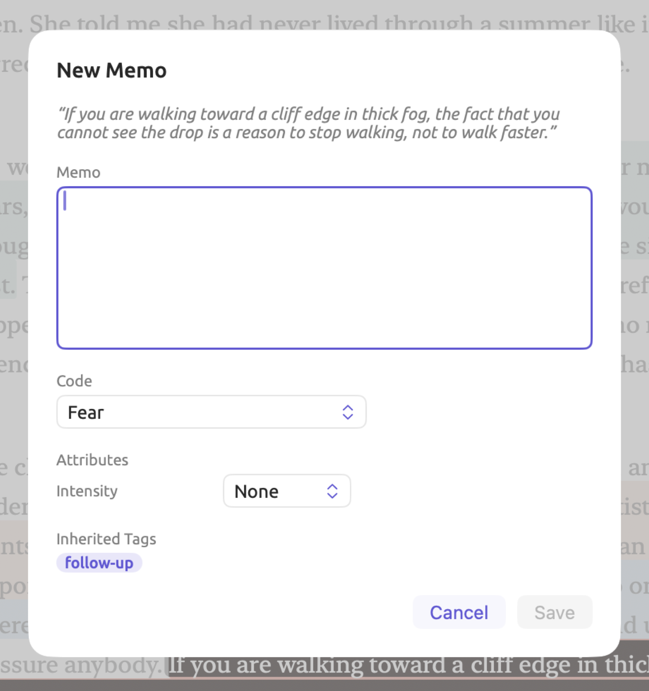
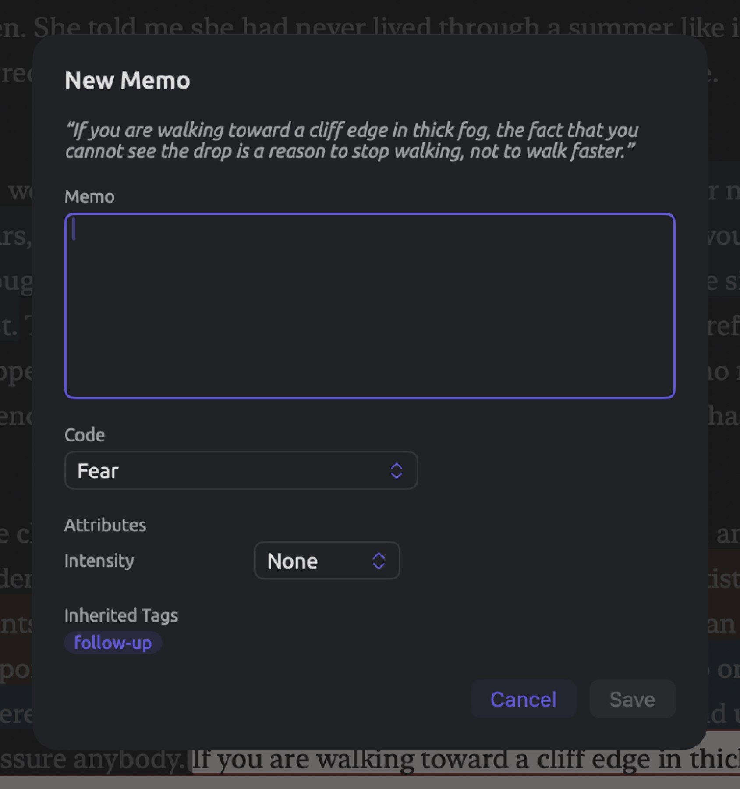
If the code has attributes, an Attributes field appears, with a control for each.
From the Code drop-down menu, you’ll see the available codes to use in this document. Selecting None reverts your coded memo to an ordinary memo.
Memos in the reader
The passage of a memo is colored yellow, while the passage of a coded memo uses the color and format of its associated code. The annotation at the start of the passage in the gutter displays the first words of the memo, and hovering the mouse pointer over it reveals the entire content of the memo. Clicking on the annotation selects the passage.
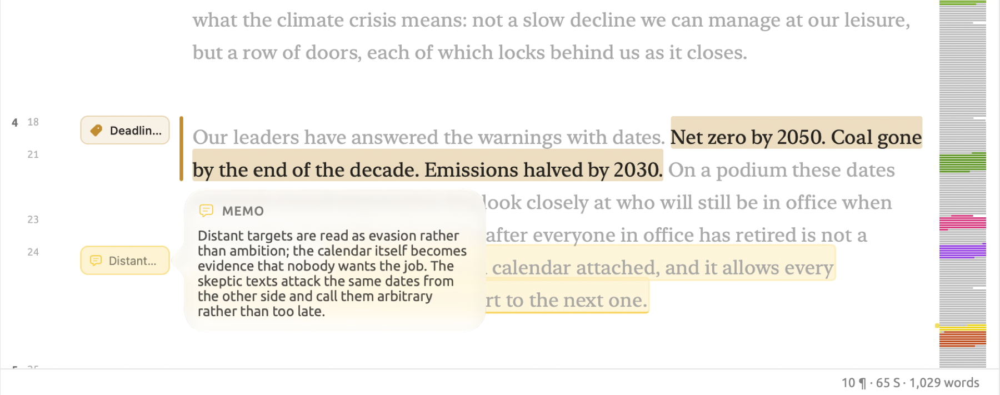
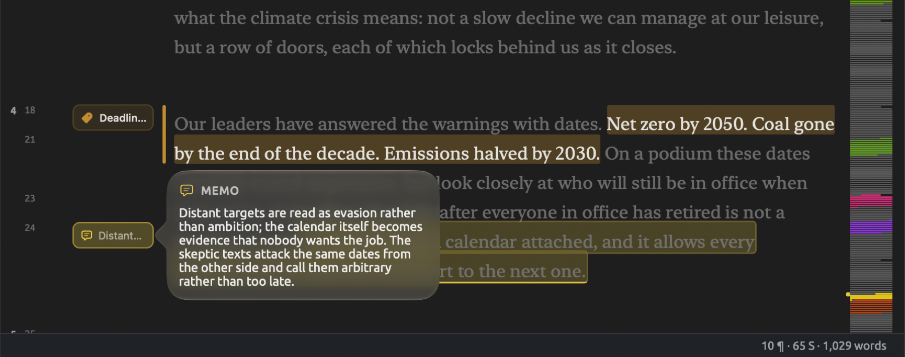
Memos always display regardless of lenses being active or inactive, and coded memos stay visible even when the Codes lens is switched off.
Reading, editing, and deleting memos
Your active document’s memos appear in the Codings facet of the inspector. Toggle to Memos on the switch at the top.
Memos appear as rows containing the memo’s icon (which looks like a speech bubble), the name of its code for a coded memo, the location of its passage, its first line of text, and its tags. Coded memos have colored icons that match their codes, and those icons are filled. Clicking a row scrolls the reader to the passage while opening the row to show up to six lines of text, the values of its attributes, an Edit button, and a Delete button. Right-clicking a row opens a shortcut menu with Edit, Go to Source, and Delete.
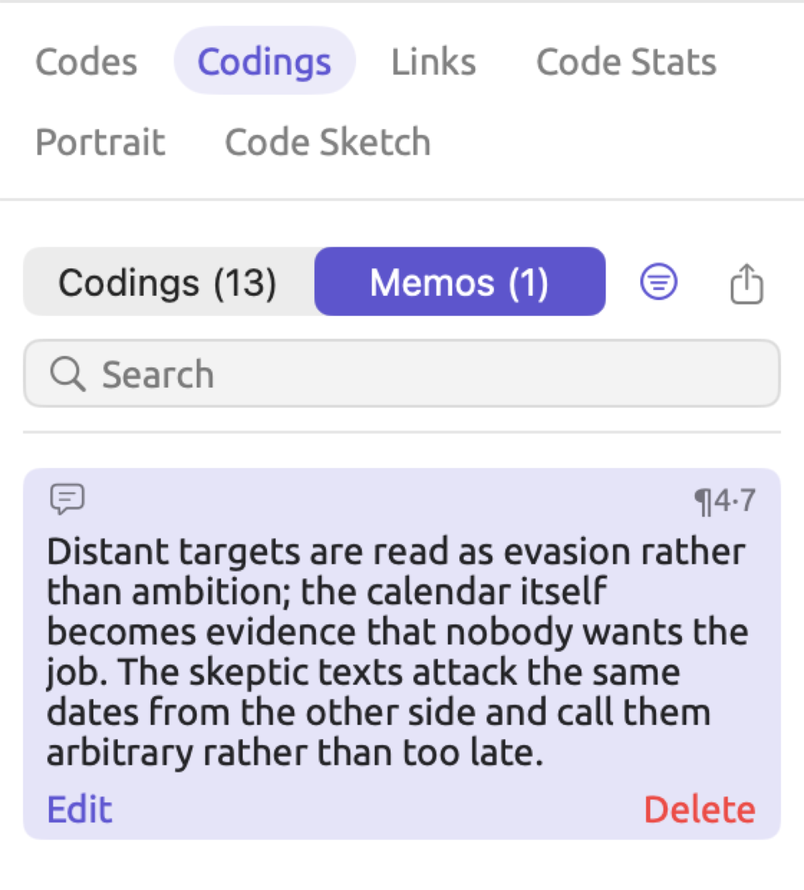
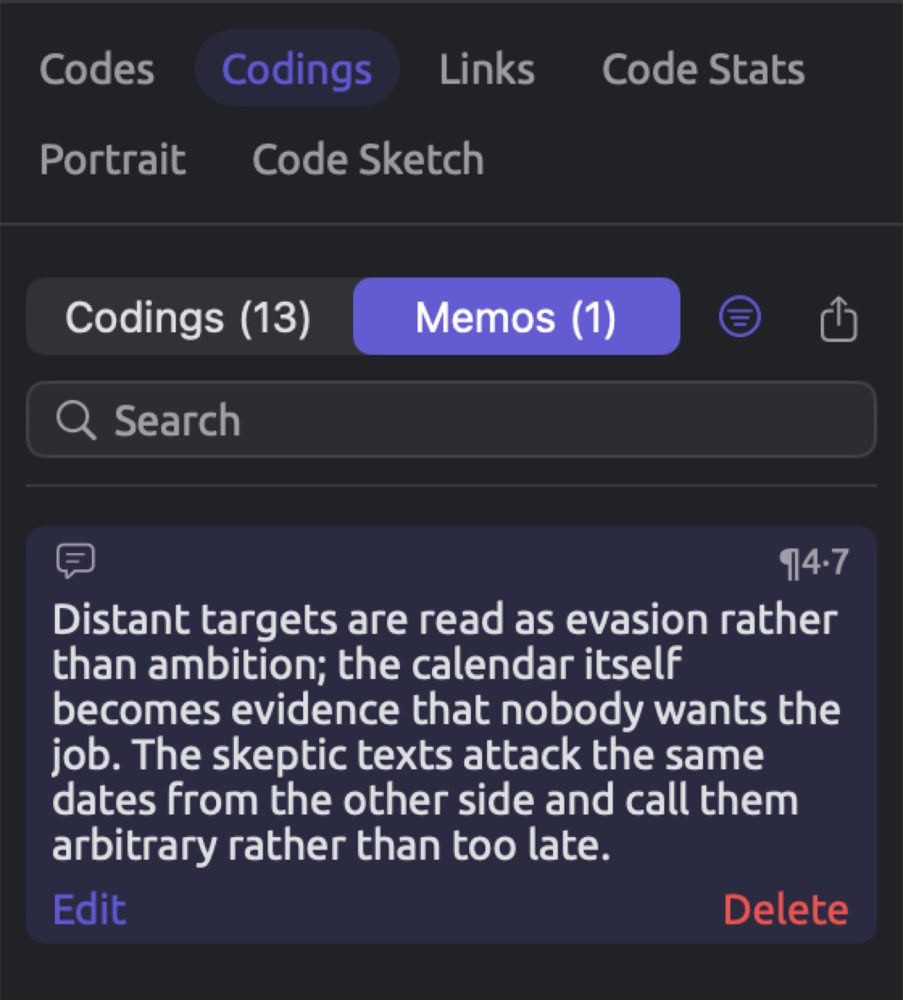
Search looks across the text of the memos themselves as well as any tags assigned to them. The filter button (Filter by code) gives you options to filter memos by code. The Export button exports the rows shown into a CSV file. That file includes the columns Code, Location, Text (the actual passage itself), Memo, and Tags.
The Edit button brings you to the Edit Memo dialog, which provides all of the same fields as New Memo and adds a Delete button on the bottom left.
The Memos view
The Memos view of the project shelf displays your memos in a table. You can display them from the entire project or the documents belonging to a particular set. The table has the three columns Document, Code, and Memo. At the top left, you will notice the number of rows currently being displayed, e.g., 2 memos for the “Activists” set.
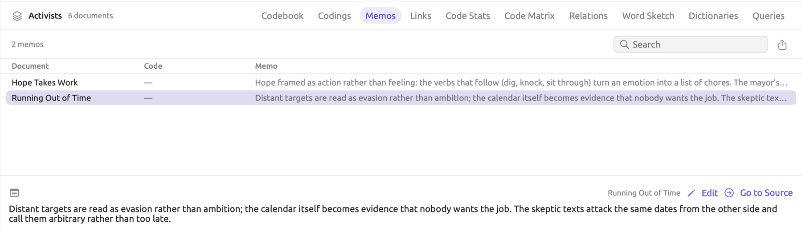
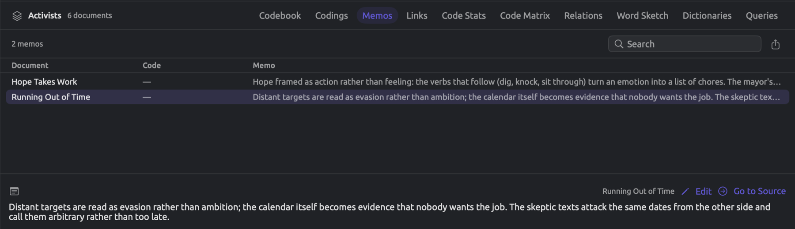
- Search lets you search for memos by text, document title, code name, or tag.
- Selecting a row opens a pane below the table displaying the full memo, its tags, and its attribute values, with Edit and Go to Source buttons for editing the memo and going to the source document where the memo was added. You can drag the divider between table and pane to give either more room.
- Alternatively, double-clicking on a row, or selecting the option Go to Source, opens the document at the location of the selected memo.
- On right-click, you get the options Edit, Go to Source, and Delete.
- The Export button exports the rows currently shown into a CSV file.
Memos on documents, codes, and the project
You attach memos directly onto passages in LemmaLoom. When importing projects from applications that support the REFI-QDA standard, however, memos attached to entire documents, codes, and the project itself can also get imported (see Importing a REFI-QDA project in Chapter 22, Exchanging and Exporting).
Document memos are located in the document’s Codings facet under Memos. Alternatively, memos are listed within the project’s Memos view, or in the Memos view of any set which includes the document within it.
Code memos and project memos only occur in the Memos view of the project. Their Document column shows Untitled. Any notes related to the same code end up combined together as a memo in the Memos view. The project itself includes a memo describing its contents.
Notes added onto links in the imported project turn into comments on the links.
Links
Links denote relationships between pairs of passages. Those relationships could be responses, explanations, contradictions, repetitions, or anything you decide. Links prove helpful in cases where texts are reacting to each other, or where keeping an argument close to its evidence matters. There are five links in “Climate Debate”. “Let’s Not Panic” contains a “contradicts” link to “Running Out of Time”, because both documents agree that no one knows where thresholds of the climate system reside, but come to different conclusions from it. Also contained in the project is a “supports” link going from “Radio Debate” to “Heat Wave Report 2024”, as the host cites a statistic from the latter text.
Linking two passages
An additional link is being drawn between two excerpts shown in the figure. In “Climate Debate”, “Running Out of Time” and “Net Zero Will Cost You” mistrust target dates, yet both authors reason in vastly distinct ways. In “Running Out of Time”, target deadlines beyond the near future are referred to as “a wish with a calendar attached”. By comparison, in “Net Zero Will Cost You”, any date referred to as a goal year is labeled as “a political decision, not an engineering one”. The link runs from the first excerpt to the second with the relation “contrasts with” and takes you from one excerpt to the other.
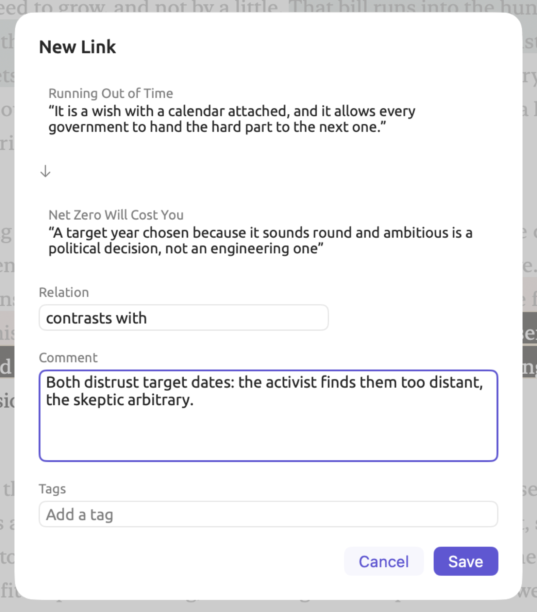
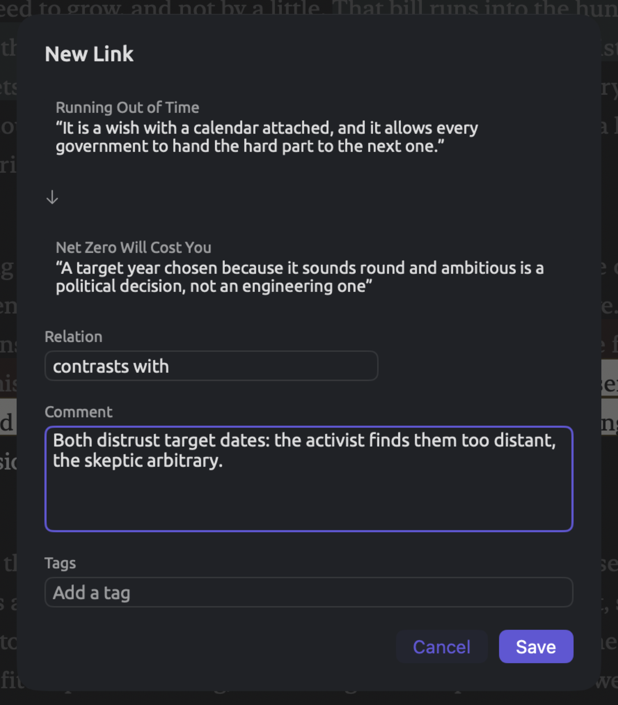
Here’s how you can link two passages:
- Select the first passage.
- Click Link in the selection bar, or press ⇧⌘L. LemmaLoom remembers the passage as the start of a link.
- Select the second passage, in the same document or in another one. The start of the link is kept while you move between documents.
- Click Finish Link in the selection bar, or press ⇧⌘L again.
- The New Link dialog shows the document and passage where you started and, below an arrow, the passage where you finished. Type the relation in Relation.
- Add a Comment and Tags, or leave them empty, and click Save.
Links are directed connections, so a link runs from the passage where you started to the one where you finished, and its relation is read in that direction. By default, a link has a relation of relates to if nothing else was indicated upon creation. Choose relations which you foresee yourself reusing a lot (e.g., “contradicts”, “explains”, “example of”); this makes finding links by those relations easy later on.
Links need both the starting and ending passage within the same project, while both passages may exist in the same document.
When you click Cancel in the New Link dialog, the starting point of a link remains intact, allowing you to create a link from there to elsewhere in the project.
To cancel a link prematurely, choose Document ▸ Cancel Link (⌥⇧⌘L), or alternatively select a passage anywhere, then click Cancel the pending link (a crossed-out link icon), located directly beside the Finish Link button.
Following a link
There is an annotation in the gutter at both ends of each link. The annotations appear in the accent color and show the relation between both passages. Hovering the mouse pointer over the annotation reveals information about the link, including the relation between the two passages, the other document (or in this document), the other end passage itself, and any comment associated with the link. By clicking the annotation or Go to the other end in its popover, you can navigate to the other end of the link. If the other end is in another document, navigating to the other end of the link will take you to that document, which opens in a separate tab.
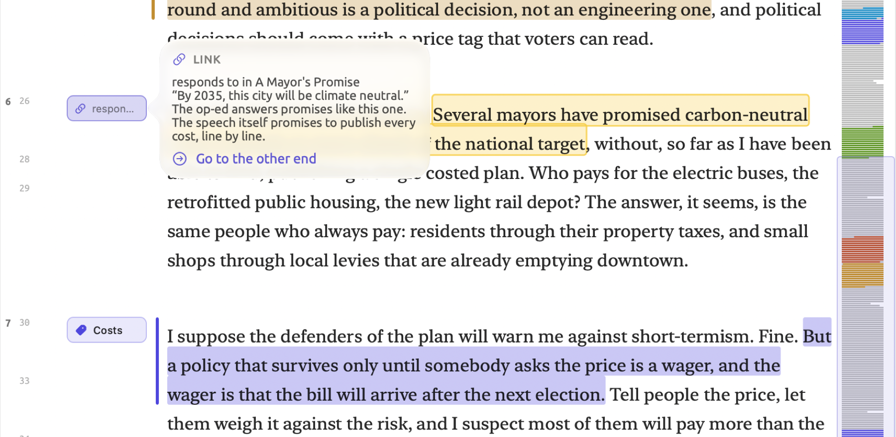

The Links facet appears in the Coding inspector. It includes all links with an end in the active document, under a heading that says something like Links (3). Export on the right of the heading exports the complete list of links as a CSV file. The list consists of entries, each containing the start point, the arrow representing the link with the relation specified, and the end, along with the associated comment and tags below them. An end appearing in the current document displays its location within the text, while an end appearing in another document displays the title of that document. You can navigate to either of the end points by clicking the arrow button next to the corresponding end point (Go to this end or Open in the other document); clicking an endpoint in the current document takes you there, whereas double-clicking an endpoint in another document opens it.
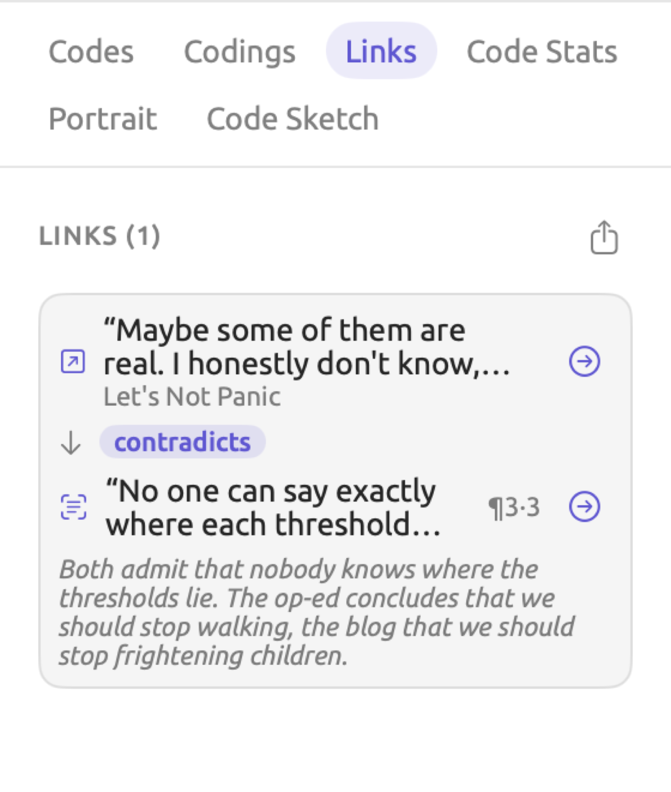
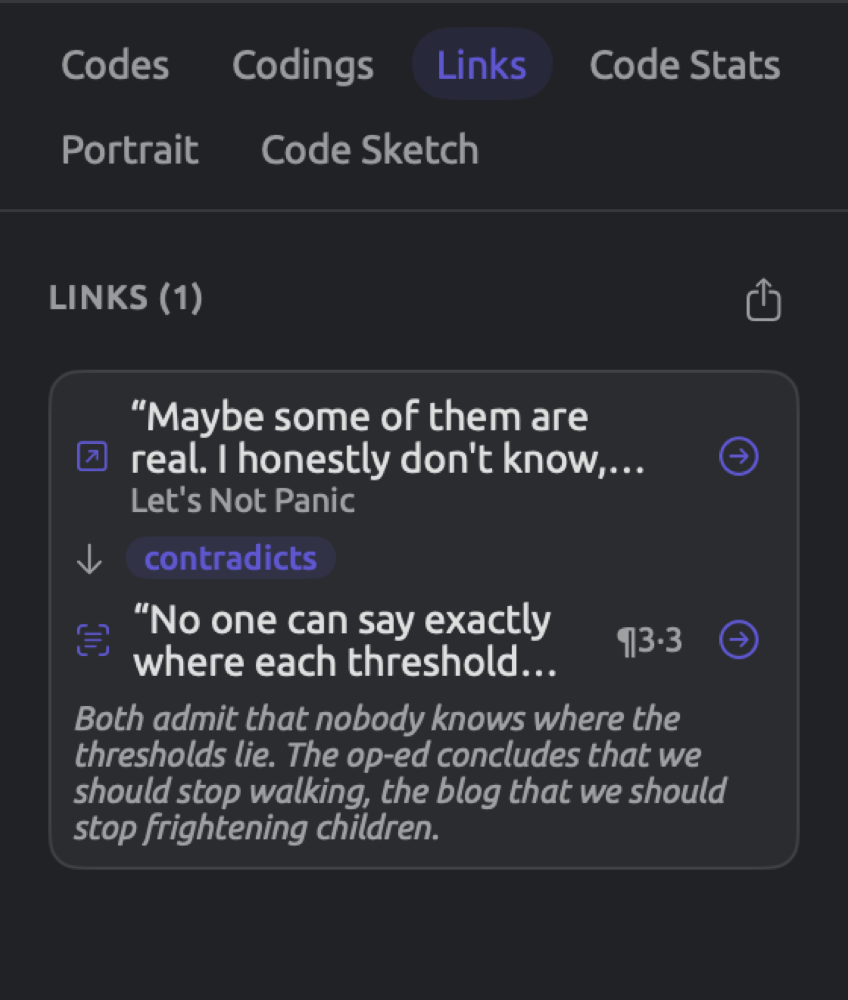
Editing and deleting links
In the Links facet, right-click on the link and select either Edit or Delete. Similarly, in the Links view of the shelf, right-click on the link and select Edit or Delete Link.
The Edit Link dialog allows you to change the relation, comment, and tags associated with the link. If you wish to attach the link to a different passage, you’ll need to delete the existing link and create a new one.
The Links view
In the Links view of the project shelf, you can look at either all links in a project, or links with at least one end in a set’s documents. The total number of links displayed will appear in the upper-left corner. Search in the Links view (at the right of the bar at the top) allows you to filter based on the passages, relation, comment, tags, or document titles involved in the link. The figure shows the five links of the project “Climate Debate” with relations being “supports”, “contradicts”, and “responds to”.
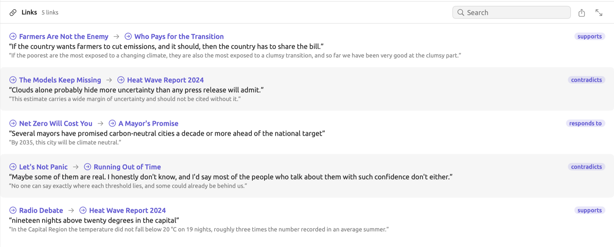
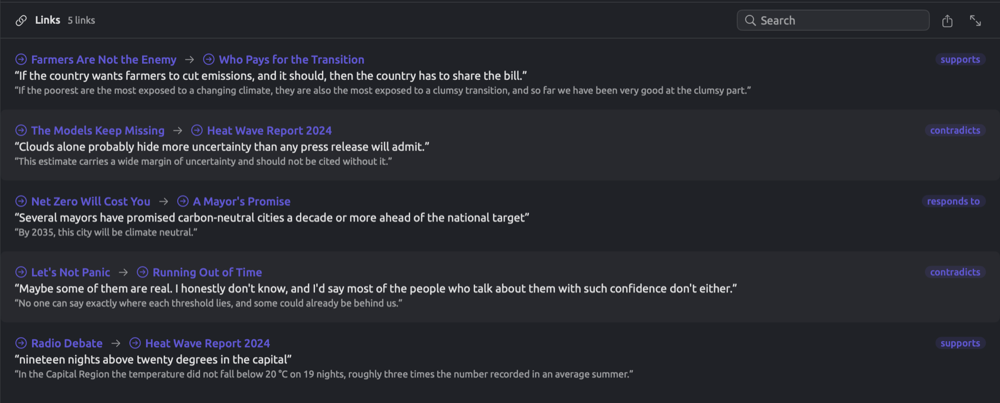
Links appear in rows showing the start document and the end document with an arrow connecting them. Following that are the relation and the two passages (the end passage appearing fainter). The tags associated with the link appear last, below the passages. You can click on a document title and navigate to that end directly. Alternatively, double-click on a row to navigate to the start of the link; alternatively, select a row and hit Return to do the same thing. Finally, you can right-click on any row and access the Edit, Open Source (start), Open Target (end), and Delete Link options.
If a link is copied to a translation, you will only get a single instance of that link in your list. Export allows you to save your list as a CSV document. That file contains the columns Source document, Source text, Relation, Target document, Target text, Comment, and Tags. During times when there are no links to export, the Export button becomes disabled and displays Nothing to export when hovered upon.
Bookmarks
A bookmark marks a passage you may need access to later on, such as a quote for a paper or where you left off coding. Four documents in the “Climate Debate” project have bookmarks, each with a comment attached. For instance, “Let’s Not Panic” has a bookmark on “Some things, at least, are settled.”; the comment reads “Ironic closing line”.
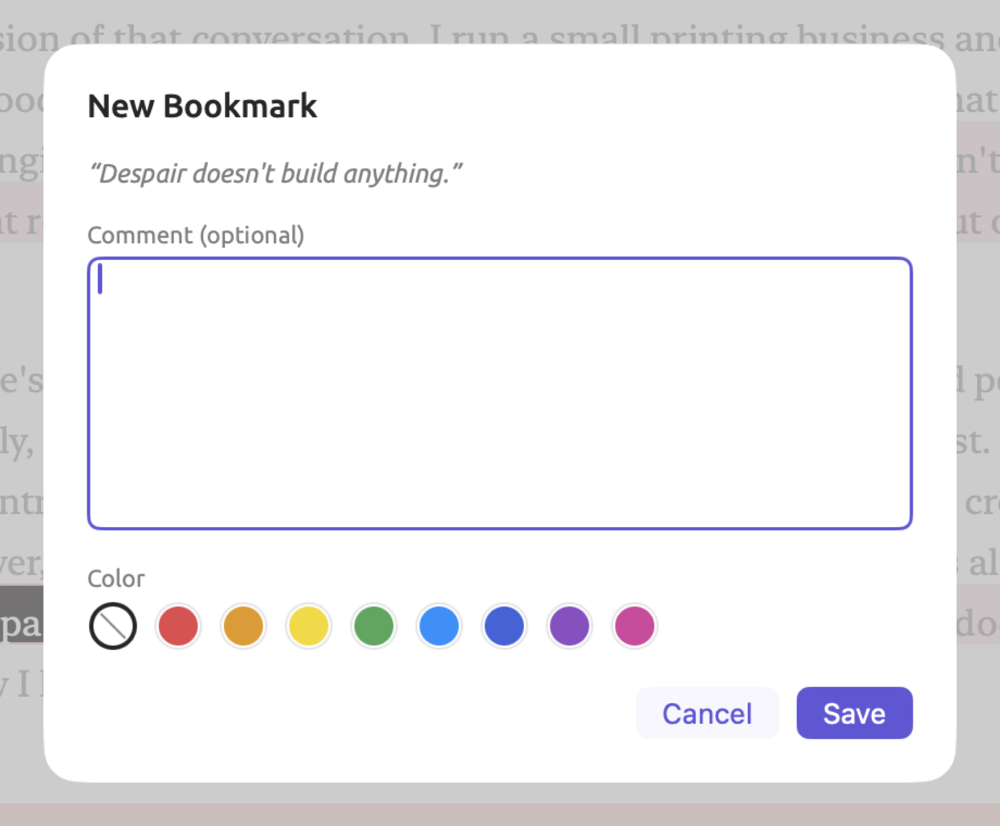
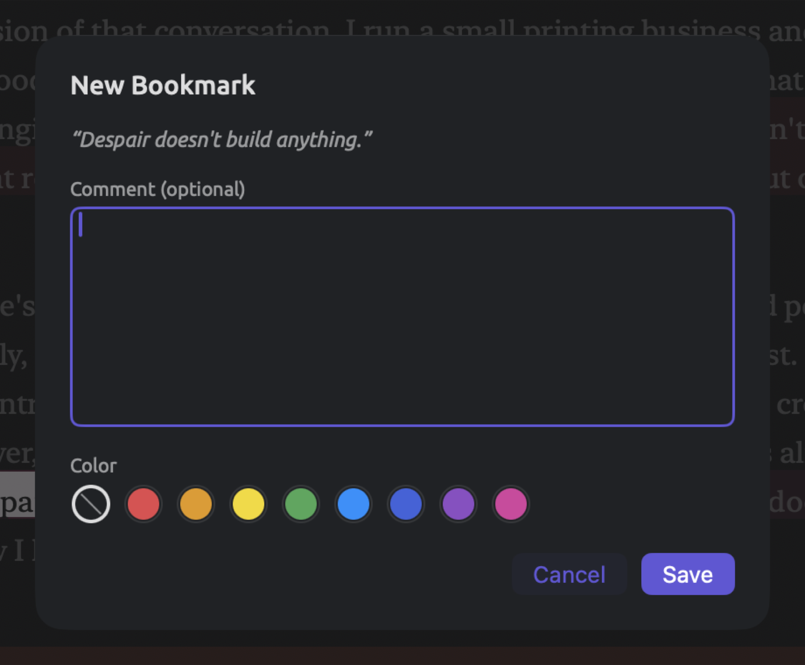
Here’s how you bookmark passages in LemmaLoom:
- Select the passage.
- Click Bookmark in the selection bar, or press ⇧⌘B.
- In the New Bookmark dialog, type a note in Comment (optional) and click a color under Color. Bookmarks offer No color and the eight swatches of codes.
- Click Save.
If you enable the Bookmarks lens (enabled by default whenever you open a document), you will find passages highlighted in the bookmark’s color, or in yellow for a bookmark without one. There will be an annotation showing the comment in the gutter next to the passage, while the document overview will show a little square box at its left edge showing you where the bookmark resides.
Whenever your selection overlaps a bookmark, Remove Bookmark replaces Bookmark on the selection bar. If you press ⇧⌘B, the bookmark will disappear immediately, and you can restore it again using the menu item Edit ▸ Undo Remove Bookmark (⌘Z).
The list of bookmarks of a particular document can be found in the inspector under Bookmarks within the Text tab (see The Bookmarks facet in Chapter 10, The Text Inspector). The rows will include a bookmark icon colored in accordance with your bookmark’s color, the comment itself or the passage in case no comments were added, and its location. Click on any row to navigate to the passage in the reader, while right-clicking it provides the options Edit (opening the Edit Bookmark dialog, which has a Delete button) and Delete. Search looks up bookmarks either by their comment or text. To export bookmarks to CSV format with columns Location, Text, and Comment, click on the Export button.
Should you wish to bookmark all the hits made by a query, there is an option in the query’s Actions menu called Bookmark Hits… (see Bookmark Hits in Chapter 18, Using Query Results). You can construct a query that lists Bookmarks to view the bookmarks of multiple documents at the same time. The units Memos, Links, and Codings share similar functionalities (see Choosing what to find in Chapter 15, Building a Query).
Coding passages automatically
Auto code uses a lens to locate annotations and then codes whatever passages are marked by those annotations all in one run. Auto code works well for anything that can be searched based on wording or grammatical patterns, including hedge expressions in dictionaries and results of saved queries. Think of one run as your first pass (see An example later in this chapter).
Among lenses, auto coding is available solely with those that you build yourself:
- the lens generated by a dictionary, a collection of words and phrases that you compile (see Chapter 19, Dictionaries);
- the lens derived from a query saved as a lens (see Saving a query as a lens in Chapter 18, Using Query Results);
- and the lens provided by a custom analyzer (see Chapter 20, Custom Analyzers).
Alternatively, you could auto code the passages returned by a query directly in the inspector.
Auto-coding from a lens
In “Climate Debate”, the dictionary “Hedges” is provided as a lens on each document. Each category in the dictionary has its own aspect lenslet, namely “Approximators” and “Shields”.
To auto code from a lens:
- Open the document and enable the lens in the lens menu at the top of the reader. The menu is disabled until the document is indexed.
- Choose Document ▸ Auto Code… (⇧⌘A). The lens menu has the same item, just above Clear Annotations. If more than one such lens is enabled, you get one item per lens, named after it, such as Auto Code with Hedges…, and ⇧⌘A chooses the first.
- In the Auto Code dialog, set up the run as described in The Auto Code dialog below, and click Auto Code.
Auto-coding from a query
There is a saved query called “Urgency Talk” in the “Climate Debate” project, with zero categories defined. In this query’s Auto Code dialog is a single row entry titled “Urgency Talk”. For this row entry, either select “Urgency” if you’d like LemmaLoom to auto-code passages with “Urgency”, or leave it as New Code: Urgency Talk.
To perform an auto code operation based on a query:
- Open a document. In the inspector, click Multimode, then Query.
- Build the query, or load a saved one.
- Open the Actions menu (the circled ⋯) and choose Auto Code….
- Set up the run in the Auto Code dialog and click Auto Code.
Regardless of whether a query is saved or not, the dialog uses the query precisely as defined using the query builder. The Auto Code… item will become disabled when a query does not permit passage annotation, for example because it finds documents or codes rather than passages, or because Show is not set to List. Hover the mouse pointer over the item for the exact reason behind it being disabled. For an exhaustive explanation on what queries qualify as lenses, refer to Which queries can be lenses in Chapter 18, Using Query Results.
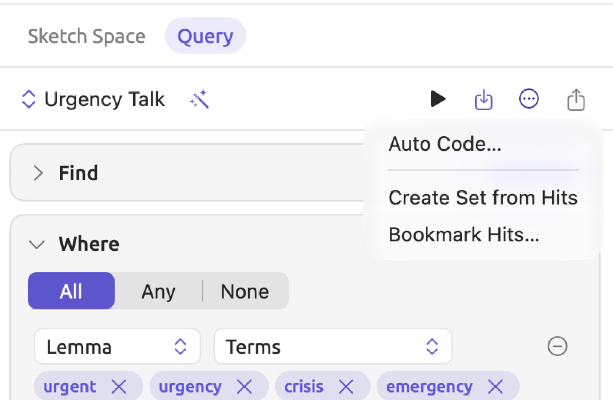


The Auto Code dialog
As you can see in the figure below, the dialog for the lens “Hedges” in “The Models Keep Missing” has two rows, one corresponding to each category in the dictionary.
The first line, Lens or Query, gives you the name of the lens or query whose output provides your passages.
Every aspect lenslet in the lens will get its own row under Codes, starting off as checked. For dictionaries, every category in the dictionary gets its own row, while queries will give either one row per category or a single row named after the query, depending on whether or not there is any category, and finally analyzers provide one row for each item in their legends. Only aspect lenslets in the legend that are enabled will have rows here. Disabling a particular lenslet prevents it from having its own row, so it is skipped in the run (refer to Choosing which aspects are enabled in Chapter 6, Lenses).
Choosing an existing code from the menu showing New Code: … at the right of each row assigns that code to the row, and when no preexisting code is chosen, New Code: … is used for that row, creating a code with the row’s name and color. The menu preselects the code with a matching name, regardless of case and accents. It will show all the codes applicable to your current document. If you uncheck a particular row, it will get ignored during the run.
In the Documents menu, you may select This Document, any set of documents belonging to the project, or Whole Project. Choosing This Document allows you to know how many passages this lens finds in the document for the checked rows (Passages). Any passage that already has the selected code is included in that number but will be ignored.
Auto Code is disabled during loading of passages (Loading) and when there is no checked row (Nothing selected).
Clicking Auto Code begins the run. It keeps the dialog open and locks all settings in place; thus, you need to choose Auto Code… once again to perform another run with new settings. While running, the Auto Code button changes to Stop.
- Progress tracks how many of the documents are done. You see values such as 3 of 5.
- Pressing Stop terminates the run after coding the current document. All previous codings remain.
- Once completed, Progress shows Codings added: and the number. Auto Code reads Done, and pressing that closes the dialog.
What auto-coding does
- A passage already coded with the chosen code over exactly the same stretch of text is skipped (i.e., a second run skips the passages the first run coded). However, passages that existing codings of the chosen code only overlap, such as one inside a whole paragraph coded with that code, will be coded.
- When running on a document set or the whole project, each original document is treated in turn as if you opened it in the app; if you started your run from the translation of a document, e.g., “Running Out of Time (German)”, then your auto code would proceed through the translation in place of “Running Out of Time”.
- A dictionary-based lens also codes unindexed documents because it works directly with text. However, an analyzer-based lens can code only indexed documents and only if they’re in a language supported by the analyzer; furthermore, a document for which you have unchecked that analyzer will be skipped.
- The rows come from the open document. In the case where a query lens has colored its results according to Color By (see Categories and Color By in Chapter 15, Building a Query), only the values that appear in the current document get rows, and only those values are coded in all others.
- For a row with a new code, its first passage found creates the new code at the top level of the code tree. Such a code will have the scope Project, the format Highlight, the row’s name, and the row’s color.
- An existing code that belongs to a single document or set is applied only within that document or set.
- Codings made during an auto code operation will not have attribute values specified, even for codes with attributes.
- Like any manual coding, newly created codings are added to the document’s translations.
- The whole run is one step in the undo history, so Edit ▸ Undo Auto Code (⌘Z) will erase every coding the run added and every code it created, including those made before you clicked Stop.
An example
The dictionary “Hedges” has two categories, “Approximators”, which includes such entries as about, around, and roughly, and “Shields”, which includes I think, maybe, and perhaps. The skeptic documents hedge much more frequently than the activist documents; thus, coding the hedges of the “Skeptics” set puts these hedges in the code tables alongside your existing codes.
With “Hedges” active in “The Models Keep Missing”, Document ▸ Auto Code… produces the dialog as seen in the figure above. The two rows, Approximators and Shields, provide the options New Code: Approximators and New Code: Shields as the names do not appear among any codes in this project yet. With This Document selected, Passages displays 10 passages total, namely 6 approximators and 4 shields found in “The Models Keep Missing”. Unchecking “Shields” reduces the figure to 6.
Checking both rows and changing Documents to Skeptics makes Progress count through the five documents in this set and stop at Codings added: 47. Among these, there are 10 in “The Models Keep Missing” and 37 elsewhere. Following this, the codebook features two new top-level codes, “Approximators” and “Shields”, colored according to the categories in the dictionary. During a run over a set that holds “Running Out of Time”, “Running Out of Time (German)” receives copies of these codings, while the Codings added: counter only shows the originals.
When you open the dialog again, “Approximators” and “Shields” are selected by default as the names coincide. After running again, Progress shows Codings added: 0, meaning there were no additional passages to be coded. Edit ▸ Undo Auto Code immediately after the initial run deletes the entire batch of 47 codings and the respective two codes.
Each match gets coded regardless of accuracy. Within “The Models Keep Missing”, the “Approximators” entry about is coded both in “About twelve years ago”, where it is a hedge, and in “a tool for reasoning about the future”, where it does not qualify as such. Read through the coded passages carefully and delete incorrect instances in the Codings facet or the Codings view.
Undoing coding work
Reversing any change made to codes, codings, memos, links, or bookmarks can be done via Edit ▸ Undo (⌘Z), while redoing previously reversed actions can be done via Edit ▸ Redo (⇧⌘Z). The action being undone or redone is named in the menu:
| Action | Menu item |
|---|---|
| Creating, editing, or moving a code | Undo New Code, Undo Edit Code, Undo Move Code |
| Merging or deleting a code | Undo Merge, Undo Delete Code |
| Making, renaming, filling, or deleting a code set | Undo New Code Set, Undo Rename, Undo Add to Code Set, Undo Remove from Code Set, Undo Delete Code Set |
| Applying, changing, or removing a code | Undo Apply Code, Undo Change Code, Undo Delete Coding |
| Changing an attribute value of a coding | Undo Set Value |
| Auto-coding | Undo Auto Code |
| Memos | Undo New Memo, Undo Edit Memo, Undo Delete Memo |
| Links | Undo New Link, Undo Edit Link, Undo Delete Link |
| Bookmarks | Undo Bookmark, Undo Edit Bookmark, Undo Remove Bookmark |
Refer to Chapter 23, Undo and Redo to find out more about how the undo history works between windows and when it gets cleared.